1Money Is Energy That Agreed to Be Counted
A river at first light, learning to be measured.
Energy, in the older and stricter sense, is the capacity to do work: to lift, to heat, to carry, to change one thing into another. Money is the same capacity wearing a number. A sum held in an account is work that has not happened yet — meals not yet cooked, roofs not yet mended, journeys not yet taken — stored in a form that strangers have agreed to honour.
The doctrine of this page is stated once, here, and then walked through a hundred and nineteen more rooms: money behaves like energy. It flows or it pools. It leaks or it is stored. It does work when it moves with intention, and it dissipates when it moves without any. None of this is magic, and none of it is a promise. It is a way of looking, and a way of looking can change what a person does on an ordinary Tuesday.
This house is not a bank, a school of investing, or a temple. It is a model, built at walking pace, of something everyone handles and few people examine: the current that runs through a household, a workshop, a life. Walk it slowly. The river will still be there at the end; the aim is that you will see it better.
2The First Definition
A copper token resting on a surveyor's chart of currents.
Definitions first, because a house built on a vague word leans. Money energy, as the term is used in these rooms, means three things at once: the money itself, the movement of the money, and the attention that directs the movement. Remove any one of the three and the picture stops being true. Money without movement is a photograph of water. Movement without attention is weather. Attention without money is a wish.
Notice what the definition leaves out. It says nothing about how much money a person has, and nothing about what the money is for. A current can be a mountain river or a garden hose; the physics of flow does not grade the stream. That restraint is deliberate. These halls are about behaviour — the shape of the flow — and the shape can be studied at any scale, honestly.
Hold the definition loosely. It is a working tool, not a creed. In hall after hall it will be tested against earning, keeping, spending, giving, and the seasons of all four, and where it creaks, the creaking will be pointed out rather than polished over. A model that admits its edges is worth more than a slogan that has none.
3Energy Is Not Good or Evil, Only Directed
A river is not virtuous. It waters the fields it reaches and it floods the ones it reaches wrongly, and it feels nothing either way. Money has the same innocence and the same indifference. The moral weight people load onto money — calling it clean or dirty, blessed or cursed — belongs not to the current but to the hands and channels that direct it.
This matters practically. A person who believes money itself is corrupting will handle it with a flinch, and a flinch is a poor grip. A person who believes money itself is salvation will chase it past the point where it serves anything. Both errors come from assigning the energy a character, when the honest statement is simpler: energy takes the character of its direction.
The halls that follow therefore speak of direction constantly and of virtue rarely. Aim the current well, and the question of the money's morality mostly answers itself in the results: what got built, what got warmed, what got left dry.
4A Coin Is a Battery You Can Hand to Someone
One small light, stored, waiting to be passed on.
A battery is energy that agreed to wait. It sits quietly, holding work in reserve, until a circuit closes and the work is done. A coin — and every unit of money above and below a coin — is the social version of the same invention: labour, time, and trust, stored in a token that can wait patiently and then be handed to a stranger who will honour it.
The comparison explains more than it decorates. Batteries lose charge if they are stored badly; so does money, and hall six will walk through the evaporation honestly. Batteries are useless if they are never connected to anything; so is money that is only ever admired. And a battery's worth is not in the battery — it is in the lamp it lights, the engine it turns, the room it warms.
Carry the image through the house. Income will be the charging current. Savings will be the stored charge. Spending will be the discharge, and the interesting question will never be whether the battery discharges — it will — but what it is connected to when it does.
5The Flow Is the Fact
Channels cut honestly, water moving where the land allows.
Ask after a household's money and most people answer with a level: what is in the account today. The level is real, but it is the least interesting fact available. A reservoir photograph tells you nothing about the river. The living facts are the flows: what arrives, from where, how regularly; what leaves, to where, how willingly; what pools, what leaks, what has not moved in a year and why.
Two households with identical balances can be in entirely different conditions, and the difference is always in the flow. One has a modest stream that arrives like weather and leaves like intention. The other has a larger pool fed by a single uncertain source and drained by obligations nobody has counted lately. The first sleeps better, and the model in these halls exists partly to explain why that is not a paradox.
So the practice taught here begins with tracing, not with judging. Before any advice is possible — and this page gives little, on purpose — the current must be seen as it is: its sources, its channels, its resting places, its exits. Rooms ninety-seven onward turn that seeing into twelve plain steps.
6Nothing Here Is a Promise
A short room, kept near the front door on purpose. Nothing in these hundred and twenty rooms is a promise. No outcome is guaranteed, no return is projected, no method is sold. The page describes a way of seeing money and a handful of practices that follow from the seeing; it does not predict what will happen to anyone who adopts them, because nobody honestly can.
This restraint is not legal caution wearing a costume — though the fine print at room one hundred and eighteen repeats it formally. It is part of the philosophy. Energy metaphors are illuminating and they are also metaphors. A person who treats a metaphor as a mechanism will eventually try to pay a bill with it, and the bill will not be impressed.
What the page does offer is attention, organised. Attention is the one input that reliably improves the handling of money, and it costs nothing but honesty. That is the entire bargain on the table, and it is stated here so that nobody walks the long halls under a misapprehension.
7Attention Is the Currency Underneath
A lantern kept trimmed: the light by which the rest is seen.
Underneath every money system runs a second one, uncounted: attention. What a person notices, they can direct. What they refuse to look at directs itself, usually toward the nearest drain. The unopened statement, the unexamined subscription, the vague sense that the money goes somewhere — these are not money problems wearing disguises. They are attention problems, and the money merely reports them.
This is why the practices in these halls are mostly practices of looking: tracing, naming, measuring, reviewing at the turn of a season. None of them requires talent, capital, or luck. All of them require the willingness to spend the underneath currency — a few honest minutes — on the visible one. People who say they cannot afford to look have the exchange rate backwards.
Attention also explains the one reliable luxury money buys, which is not goods but indifference by choice: the freedom to stop attending to money for a while because the channels are known and the reservoir is honest. The goal of the model is not a life spent watching the meter. It is a life where the meter can be trusted, and therefore left alone.
8The Model Is a Lens, Not a Law
Two rivers joining: where the picture helps, and where it ends.
A lens is judged by what it lets you see, not by whether the world is made of glass. Money-as-energy is a lens. Through it, some things snap into focus that accounting language leaves blurry: why a windfall can vanish like spilled water, why a debt feels heavier than its arithmetic, why giving sometimes leaves a person richer in everything except the ledger.
Other things the lens distorts, and the distortion should be named. Money is not literally conserved the way energy is; it is created and destroyed by institutions in ways no river manages. Money carries obligations, laws, and histories that water never signed. Where the metaphor and the ledger disagree, the ledger wins, every time, and room one hundred and eighteen will say so again in the fine print.
Use the lens where it sharpens and set it down where it blurs. That instruction, applied consistently, is most of what this house means by wisdom — in money, and in several other subjects it is too polite to name.
9Wealth as Weather, Not as Worth
A person's wealth is weather that gathered around them: some of it earned by long work, some of it blown in by season and place, some of it inherited like a climate. Their worth is a different subject entirely, on which the weather reports nothing. Confusing the two measures is the most expensive error in the whole territory this page covers, and it is made by rich and poor alike.
The energy model helps because weather is nobody's character. A reservoir can be full because the rains were kind; a spring can run low in a drought that the spring did nothing to deserve. What remains within a person's direction is the plumbing: the channels, the storage, the repairs, the decisions about where the water goes while it is theirs to direct.
Read the halls that follow in that spirit. They will speak of behaviour, structure, and rhythm — the things that respond to attention — and they will leave the question of anybody's worth exactly where they found it: not theirs to grade.
10The Conserved Quantity
A reservoir at dusk: what is stored is measured in options.
Physicists cherish energy because it is conserved: it changes form — height into motion, motion into heat — but it does not simply vanish. Money is almost like that, and the almost is instructive. Money changes form constantly: hours into wages, wages into rent, rent into a landlord's wages in turn. Follow any unit of it far enough and you hold a story, not a token.
Where the conservation fails is at the household's edge: money leaks into heat. Fees, spoilage, forgotten renewals, purchases that do no work — every system has its friction, and friction is money that changed into nothing useful at all. The conservation mindset is still worth borrowing, because it turns waste from a vague shame into a specific, findable address: the exact place where the current turned to heat.
Kept over years, that single habit — asking of every outflow, what work did that do — separates the households that understand their river from the ones that only visit it. The question is not miserly. It is the same question an engineer asks of a machine she respects.
11What This Page Refuses to Say
A closed ledger on a door left deliberately shut.
Every honest house has a list of things it will not do hung by the door. Here is this one's. It will not recommend an investment, a coin, a fund, or a scheme. It will not project earnings, quote returns, or repeat statistics it cannot stand behind. It will not tell any reader that wealth is a mindset, that poverty is a failure of vibration, or that the universe settles accounts.
It will not sell a course from these rooms, because there is no course. It will not describe a reader's money as blocked because of their character, nor promise that attention alone repairs what wages, health, and luck have broken. The model offered here is modest because the subject is not, and modesty is the only tone in which a hundred and twenty rooms on money can be written without lying.
What the page will do is slower and smaller: define its terms, walk the flow from source to sea, name the leaks and the seasons, and leave the visitor with a map they drew themselves. That is all, and the house maintains it is enough.
12The Door of the First Hall
Every hall in this house ends with a door, and the doors are working parts of the design: a place to stop, put down what the hall has handed you, and decide whether the next one is worth opening. The first hall has handed you a definition, a lens, a refused promise, and a warning about worth. That is a full load for twelve rooms.
Beyond this door the questions turn practical. Where does the current actually come from — not in philosophy but in a named household, with named springs? The second hall walks the headwaters: work, gifts, time, luck, and the small sources people are embarrassed to count, which are sources all the same.
Go on when you are ready. The house keeps no record of how long a visitor stands at a door, and the river, as established, is in no hurry whatsoever.
13Where the Current Comes From
Headwaters under high stones: every current has a beginning.
Every flow begins somewhere, and money flows are no different — though people speak of income as if it condensed out of the air on a fixed date each month. Behind every arrival stands a source: labour sold, a thing rented, a skill exercised, a gift given, a debt taken. Naming the sources precisely is the first act of the whole practice, because a source you cannot name is a source you cannot protect, repair, or replace.
Sources differ in character more than in size. Some are springs: slow, self-renewing, nearly impossible to exhaust and equally hard to enlarge. Some are rains: generous, seasonal, and indifferent to your plans. Some are borrowed headwaters, opened by a signature and closed by another, which arrive as flow and leave as obligation — the only source that flows in both directions at once.
The second hall walks these beginnings one by one. It is not the most exciting hall in the house and it may be the most important, because every later room — circulation, leaks, seasons, steps — quietly assumes that the visitor knows, in writing, where their water rises.
14Springs, Wells, and Wages
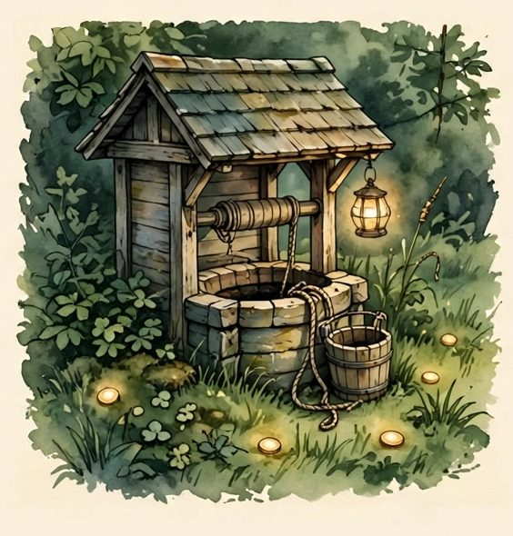
A well-house in working order: drawn daily, never drained carelessly.
For most households the great source is work, and work arrives in three classic shapes. The spring is the wage: steady, bounded, renewed on a rhythm set by someone else. The well is the trade or profession: drawn by effort, deeper with skill, available in dry times to those who dug it before they needed it. And the rain is everything irregular — the commission, the harvest, the occasional windfall — welcome, unplannable, and dangerous to budget as if it were a spring.
Confusing the shapes is the classic beginner's error at the headwaters. A household that treats rain as a spring expands its channels in the wet season and watches them crack in the dry one. A household that treats its well as a spring forgets that wells are drawn by effort and can be neglected; the rope frays quietly, and the discovery is always made at the worst moment.
The model's counsel is descriptive, not prescriptive: know which shape each of your sources is, and let the rest of the system — the reservoir, the spending rhythm, the reserves — be built for the shapes you actually have, not the ones the neighbours appear to.
15The Spring You Dig Yourself
Some sources are found and some are dug. The dug spring is the deliberate one: the qualification earned at night, the small offering built in a workshop, the reputation assembled job by job until strangers begin arriving with water of their own. Digging is slow, unglamorous, and entirely without guarantees — which is precisely why the resulting source has a character the found ones lack: its owner understands it, because she made every metre of it.
Notice what digging requires: not money, mostly, but the underneath currency of room seven — attention, spent in advance, on a source that does not exist yet. That is the hardest expenditure in the whole system and the reason dug springs are rarer than found ones. The attention must be paid before there is any flow to show for it, in the faith — not certainty — that the ground holds water.
The house takes no position on what anyone should dig. It only records the pattern that every household envied for its calm turns out, on inspection, to be standing over at least one source that somebody dug slowly, years earlier, while no one was watching.
The Money Energy Desk
One desk receives all correspondence for this house — questions, corrections, flood marks from your own bank. It is read in the order it arrives. The desk gives no financial advice; it keeps the house.
16Rain You Did Not Make
Rain arriving over the valley: welcome, and not to be budgeted as climate.
Not all inflow is earned, and pretending otherwise corrupts the bookkeeping of a life. Gifts arrive. Inheritances arrive. Luck arrives — the buyer who overpaid, the year the whole valley prospered, the door that opened because someone mentioned a name. The honest map of sources has a column for weather, and the column is not an embarrassment. It is simply where a household records what it did not do.
Rain has two rules in this house. The first: never call rain a spring. Plans built on weather fail on schedule. The second is subtler: never refuse rain out of pride, either. The household that disdains unearned water on principle will stand dry beside a full rain barrel explaining itself, and the explanation does not water anything.
What rain is for, the reservoir hall will argue, is storage and repair: the unglamorous strengthening of the system during the season when strengthening is cheap. Rain spent as if it were climate is the oldest story in the valley. Rain stored as if it were rain is the whole art of the fat season, waiting patiently in hall eight.
17Borrowed Headwaters
A sluice opened by signature: water now, obligation built into the gate.
Credit is a source with a direction problem: it flows in like every other source, and then, uniquely, it flows back out with a toll attached. To borrow is to open a sluice in someone else's reservoir and accept that your own future flow will service the gate. There are seasons when that is the wisest engineering in the world — a roof, a tool, a bridge over a bad month — and seasons when it is simply drinking tomorrow's water today and calling it a spring.
The energy model adds one useful clarity: borrowed water arrives without the work that usually makes water yours, so it carries none of the information real sources carry. A wage tells you what your labour is worth to someone. A gift tells you what you are worth to someone. A loan tells you only what a stranger calculates about your future, which is a colder and narrower fact.
The house is not against borrowing; it is against mislabelling. Enter borrowed headwaters on the map in a different colour, with the return channel drawn in from the start, and half the damage debt does to households — the surprise — is engineered out before the signature dries.
18A Source Can Be Small and Still Be a Source
There is a temptation, when drawing the map of inflows, to leave off the small ones as beneath notice: the occasional sale of something handmade, the modest rent from a spare room, the loyalty of one small client. The temptation is an accounting error dressed as dignity. A source is defined by its flowing, not by its impressing anyone, and small sources have a property large ones envy: they are hard to lose all at once.
Small sources are also where new rivers are born. Very few households acquire a great source at full size; most great sources are small ones that were not embarrassed out of existence before they could grow. The spring you dig yourself in room fifteen begins, almost always, as an entry in the map's smallest column.
Record them all, then. The map of inflows should be complete before it is impressive, because every decision later in this house — storage, rhythm, the twelve steps — reads from that map, and a map with courtesies in it is a map that lies.
19Many Small Springs Beat One Proud River
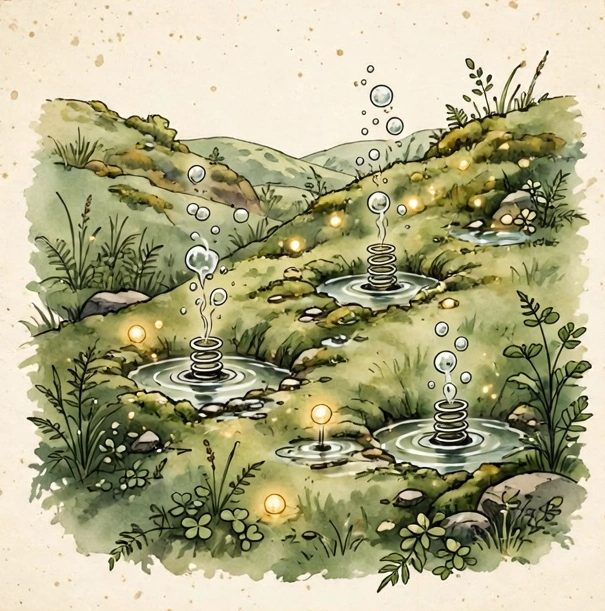
Three springs in one hillside: the water does not care which is grandest.
One proud river is a magnificent sight and a fragile system. When it runs, everything is easy; when it falters — a lost client, a closed plant, a changed market — the whole valley learns the meaning of a single point of failure in the same week. Many small springs are less photogenic and far harder to kill. Drought takes them one at a time, and rarely all.
This is not an argument for scattering effort across a dozen half-dug wells. Attention is finite, and a spring abandoned at two metres deep is just a hole. The pattern that works, in household after household, is a main source kept healthy and one or two secondary sources kept alive — not maximised, not worshipped, simply never allowed to silt up entirely.
The deeper point is about temperament. A household fed by several sources negotiates with the world differently from one fed by a single gatekeeper. It can refuse a bad price, survive a bad season, and say the occasional clean no. Diversification, in energy language, is not a portfolio strategy. It is the difference between a valley and a hostage situation.
20Sources Dry; Sources Move
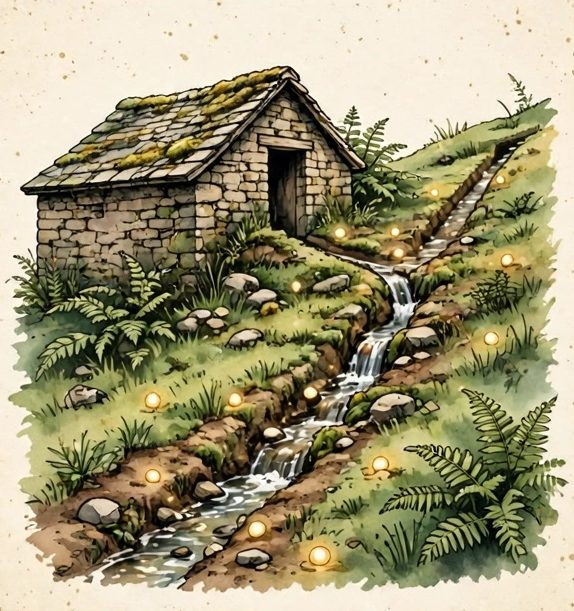
An old spring-house, its channel being cut anew uphill.
No source in any household's history has flowed forever, and the map of inflows is always a portrait of the present pretending to be a portrait of the permanent. Springs dry: industries cool, clients retire, bodies tire, tastes migrate. Springs also move: the same skill, carried two valleys over, finds water that the home valley no longer holds. Both facts are weather, not tragedy, and both are easier to meet early than late.
The practical habit this room recommends is an annual question, asked without panic: if this source halved, what would the map look like — and if it doubled? Neither question is a prediction. They are rehearsals, and rehearsals are how households discover which of their secondary springs deserve a season of digging before the digging becomes urgent.
What must not happen is the opposite habit: treating the current source as a fact of nature and every question about it as disloyalty. Rivers do not feel betrayed by being re-surveyed. Only people protecting a comfortable story do, and comfortable stories are the most expensive plumbing a household owns.
21Tapping a New Spring
A new spring is tapped the way an old one was dug: slowly, at the cost of attention, with no ceremony when water first shows. The difference between tapping and digging is mostly timing. The dig of room fifteen happens before the need; the tap usually happens during it, when a source has dried or thinned and the household goes looking uphill with a divining rod made of its own skills, contacts, and half-forgotten assets.
Expect the first flow from a new source to be a trickle and do not judge it by the standard of the river it is replacing. New springs are shallow because they are new. The households that survive source failure are the ones that let a trickle be a trickle for a season — supplementing it, learning its moods — instead of demanding it perform like the old river by the second month and abandoning it in disgust.
And keep the old tools. The skill that found water once is itself a kind of watershed: it does not appear on the map of inflows, but every future source on that map will be discovered by it.
22Protect the Watershed
High grass and clean banks: the land above the spring, kept well.
Every spring has a watershed: the whole slope of land whose rain becomes its water. A household's watershed is everything upstream of its income — health, reputation, skills kept current, relationships kept honest, tools kept working. None of it appears in the account, and all of it decides what the account will contain in five years. Watersheds are protected by boring, regular acts: the check-up, the maintained qualification, the apology made promptly, the machine serviced before it screams.
Watersheds are also damaged in boring, regular ways: the skill left to date, the contact left unanswered, the small dishonesty that makes one bridge unusable forever. The damage rarely announces itself at the source. It arrives, like all upstream news, downstream and late.
The practical counsel of this room is a reallocation of worry. Most households fret at the tap — the balance, the bill — where almost nothing can be changed, and neglect the watershed, where almost everything can. Walk uphill with your attention. That is where your water is decided.
23Gratitude Is Maintenance
Hands-off gratitude: a tended gate, a clean channel, a word of thanks.
It sounds decorative and is anything but: gratitude is the maintenance schedule of the sources. The client thanked specifically renews. The employer whose good faith is acknowledged keeps extending it. The relative whose gift was received as water — used visibly, reported on, honoured — remains a spring in the emotional sense, which is the sense that decides whether gifts flow twice. Ingratitude does not usually close a source with a slam. It closes it with silt.
The same maintenance applies inward. A household that never acknowledges its own main source — the working hands at its centre — will eventually find the spring producing at the level of its appreciation, which is to say resentfully and less. Rest, credit, and the occasional explicit word of thanks to oneself are not indulgences in the system. They are watershed work.
None of this is mysticism about attracting abundance. It is gardening. Sources are relationships with the world, and relationships, like channels, stay open in proportion to the care spent keeping them clear.
24The Map of Inflows
Close of the second hall: the exercise it leaves behind. Take one page and list every inflow of the last year, however it arrived — wages, fees, gifts, sales of the unneeded, interest, the found note in the coat. Beside each, write its shape: spring, well, or rain; and its source in plain words; and the year it began. Most people who do this honestly discover two things: the map is longer than they feared, and shorter than they hoped.
Do not total it yet. Totals invite judgment, and judgment is for later halls. This hall's work is cartography: the current, seen from its beginnings, without commentary. A map drawn without flattery becomes the foundation under everything the house builds next — the circulation traced in hall three, the leaks hunted in hall four, the reservoir measured in hall six.
Keep the page. You will annotate it at room ninety-eight, when the twelve steps ask you to name every source again — and the difference between the two drawings will be the measure of what the walk through this house has done.
25Money at Rest Is Money Asleep
A full channel at rest before the gate opens: potential, patiently held.
Money pooled and money moving are the same substance in two different states, and the states are not morally ranked — but they do different work. A reservoir can wait; only a current can turn a wheel. A household's wealth, in the energy model, is not fully real until some of it is in motion: paying, building, feeding, repairing, giving. The rest is potential, which is a fine thing to have and a poor thing to be.
This is the room where the hoarding instinct meets its gentlest correction. Keeping is honoured in this house — hall six is devoted to it — but keeping is storage for the sake of later work. Money that will never be allowed to move has quietly resigned from being money. It has become a score, and scores, unlike currents, do no work at all except on the feelings of the scorer.
The question circulation asks is therefore never how much do you hold, but what is your holding for, and when, and through which channels does it leave the reservoir to do it. A flow with answers to those questions is a system. A flow without them is just water finding its own way downhill.
26Velocity Without Hysteria
The same stream, quickened by a narrowed channel.
Economists have a dry word, velocity, for how often a unit of money changes hands in a season, and the word conceals a homely truth: the same coin can pay the baker, whose payment pays the miller, whose payment repairs the roof of the very house the coin started from. One unit, three jobs. A valley where money moves briskly between neighbours is richer in services than a valley with more money standing still, and everyone who has lived in both kinds of place knows it in their bones.
Velocity has a shadow, though, and this house will not pretend otherwise: money can also circulate in a panic, fleeing from hand to hand because nobody trusts the next hour. Speed is not health. Health is speed with confidence — the coin accepted without flinching because the acceptor expects the system to be there tomorrow.
For a household, the usable lesson is small and concrete: pay promptly, and you add a little confidence to every loop you belong to. It is one of the few forms of generosity that costs, in the end, almost nothing, and hall seven will return to it.
27The Market Is a River System
Zoom out from one household and the picture assembles itself: millions of channels, junctions, reservoirs, and mills, joined into something with weather of its own. A market is a river system. Prices are the water levels at the gauges — signals about where the current is scarce and where it is standing deep. Crises are what happens when channels everyone assumed were permanent turn out to be seasonal.
The model earns its keep here by making the impersonal personal in the right direction. A household cannot dam the main river and should not try. It can know which distributary it drinks from, keep its own banks in repair, and notice — earlier than the crowd does — when the water at its own gauge is changing colour or level. Attention at the local gauge is not paranoia. It is the same skill as room twenty-four's map, practised at a larger scale.
And the river metaphor returns the household one favour: it removes the melodrama. Rivers rise and fall; channels silt and are dredged; no season in the system's long history has yet been the final one. To live beside a river calmly is the whole ambition of this house.
28Every Payment Is a Small Act of Confidence
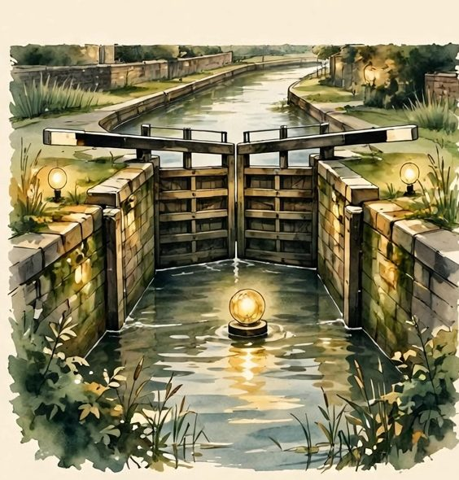
An open hand of water passing the gate: payment as a small ceremony of trust.
Every payment is two events wearing one coat. The first is the movement of funds, which the ledger records. The second is a declaration: I accept your work as real, I honour my word, this channel between us is open. When payments are made cleanly and on time, the declaration is quiet and cumulative, like good weather. When they are late, grudged, or endlessly disputed, the second event poisons the first, and channels begin, almost invisibly, to route around the difficult bank.
This is why some suppliers answer one customer's call before another's, and why some doors open at a name. The ledger world calls it reputation and files it under soft assets. The energy model files it where it belongs: in the plumbing. Confidence is not decoration on the system; it is the pressure in it.
No one can afford to be careless about which of the two events their payments are performing. The funds are spent once. The declaration is spent every time, and it compounds in both directions.
29The Hands It Passes Through
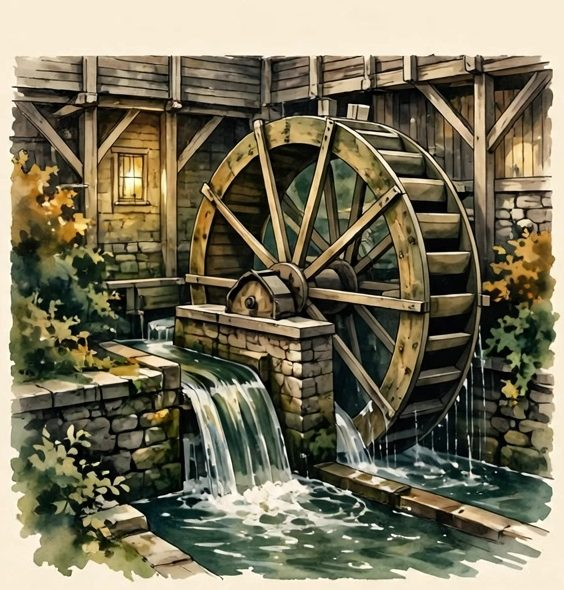
The miller's mark, the baker's mark, the carter's: one coin, many doorways.
Trace any coin backward and it becomes a crowd. It has been a wage and a grocery bill and a bus fare and a birthday gift; it has slept in vaults and flown through wires; it has been earned in rain and spent in hospital corridors. Money's anonymity is a polite fiction. In truth it carries the temperature of every hand it has passed through, and whole trades can be read by whether the money arrives warm or cold.
There is a practical meditation available here, and the house recommends it once, at room ninety-nine, as an exercise: follow one day of your own outflows and notice how many lives the current touches before evening. The exercise is not sentimental. It recalibrates the spender. Money leaving the reservoir stops looking like loss and starts looking like what it physically is — your stored work, going out to do work among strangers.
That recalibration matters for the hall on giving, later. A person who has truly seen their money's downstream tends to aim it better, the way a person who has visited the sea is more careful what they pour into the river.
30The Local Loop
Between the household and the world market lies the most underrated circuit of all: the local loop. The café that banks locally, the tradesman who hires in the parish, the market stall stocked from the next valley — in a healthy local loop, money works several shifts before it leaves the district, and each shift is somebody's source. It is velocity, from room twenty-six, with faces on it.
The loop is not a fortress and this house will not romanticise it into one. Valleys that try to keep every drop home end as stagnant ponds. The art is proportion: enough local circulation that the place has a pulse, enough exchange with the wider river that the water stays fresh. Households face the same proportion question — the familiar shop versus the distant warehouse — and there is no doctrine here, only the observation that the choice is a choice about circulation, made dozens of times a year, usually while thinking about something else.
What the desk can say plainly: when you spend, some of the value you are buying is the continued existence of the channel you are buying through. Pay for that on purpose when it matters to you, and the loop will be there in your lean season, when you are the one standing at the stall.
The Money Energy Desk
One desk receives all correspondence for this house — questions, corrections, flood marks from your own bank. It is read in the order it arrives. The desk gives no financial advice; it keeps the house.
31Hoarding Is a Dam, Not a Vault
A lake with no outlet stream: beautiful, and quietly going stagnant.
At the far bank from circulation stands hoarding, and precision matters here, because this house defends storage and criticises the dam. The difference is purpose. A vault stores against a named future: the tax season, the repair, the lean month, the opportunity that must be grasped in cash. A dam stores against nothing in particular. It is accumulation whose only plan is more accumulation, and its tell is that no state of the reservoir is ever declared enough.
Dammed money does a quiet damage beyond its own stillness. It backs up. Decisions wait on it, other people's currents are impeded by the flood of what is not being risked, and the owner — this is the strangest symptom — often feels poorer than the flow-fed neighbour with a tenth of the pool, because a dam's owner relates to money as a besieged garrison relates to water: as something whose loss is death.
If anything in this hall stings, hall six is the antidote rather than the accusation: storage rebuilt as a battery with a purpose and a gauge. The current can be kept. It simply must be kept for something.
32Circulation Is Not Spending for Its Own Sake
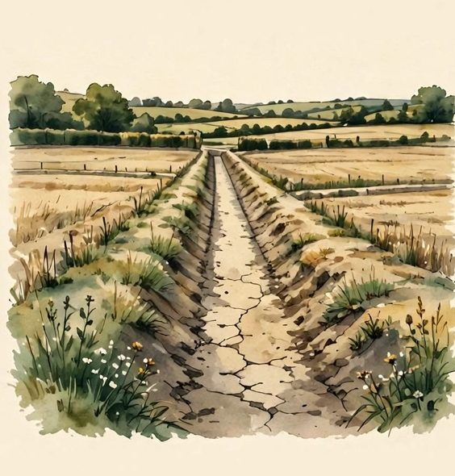
An empty channel, honestly dry: rest is also a state of water.
A necessary correction, placed in the middle of the circulation hall like a stone in the stream: movement is not a virtue in itself. Money that must always be moving — spent because it arrived, churned because stillness feels like failure — is not circulating. It is leaking with good public relations. The mill wheel turns because water moves, yes; but the miller who ran his wheel on an empty race, purely to hear it turn, would be a fool in any century.
Circulation, as the term is used here, means flow through work: the coin leaves, something real happens, value returns in another form — a repaired roof, a fed table, a debt retired, a neighbour's source sustained. Where nothing real happens between the outflow and the return, there was no circulation, only motion, and motion is what friction eats.
This is also the house's answer to the salesman of urgency, who profits whenever a household can be made to feel that stillness is loss. Stillness, chosen and gauged, is storage. Stillness, feared and hidden, is a dam. Motion, unexamined, is neither — it is merely expense.
33The Mill Wheel Turns Because Water Moves
Stand at an old mill and the whole doctrine of this hall is written in timber and stone. The wheel does not turn because the miller believes in it, or because the river is large in some other valley. It turns because water, here, is moving past a well-placed wheel. Every earning enterprise ever built is that wheel: a device positioned where a current already flows, shaped to take honest work out of the passing stream.
The image disciplines two common errors. The first is building wheels in dry valleys — offerings aimed at currents that do not exist — and then concluding that wheels are frauds. The second is standing in a live river without a wheel, working ever harder with cupped hands, and concluding that the river is unfair. Rivers are not fair or unfair. They are flowing or not, here or not, and the wheel must go to the water.
When hall five turns to earning, it will keep the mill in view: position first, effort second, and the humility to move the wheel when the river, as rivers do, changes its course.
34Blocked Rivers Flood the Wrong Fields
Water standing in the wrong field at the wrong season: a signal, not a scandal.
Block a river carelessly and the water does not disappear; it goes somewhere uninvited. Household finances flood the same way. Money dammed out of one channel by fear or inattention — the conversation not had, the bill not opened, the budget category quietly abolished — reappears as pressure in another field entirely: the sudden quarrel, the insomnia, the purchase made at midnight for reasons nobody can reconstruct in daylight.
This is why strictly financial problems so often present as non-financial symptoms, and why the reverse is also true. The flood in the wrong field is information about a blockage upstream, and it is nearly always kinder to go and look at the blockage than to keep sandbagging the field.
The next hall is devoted to exactly that looking: leaks, dams, friction, and drag, inventoried one by one, calmly. If this hall has done its work, the visitor arrives there already convinced of the premise the whole inspection rests on — the water is not the enemy. It is only ever the plumbing.
35Reciprocity, the Oldest Plumbing
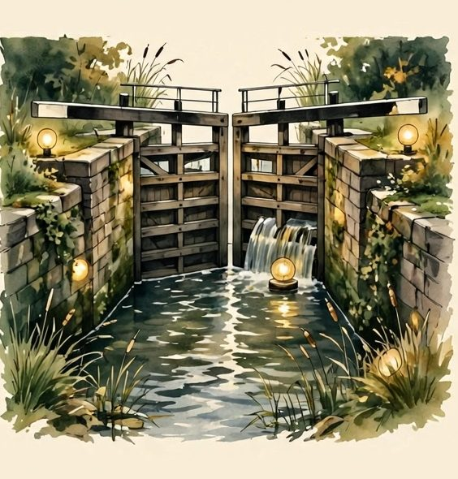
Two channels exchanging at a lock: the oldest machinery of fairness.
Before money had its modern plumbing, it had reciprocity: the favour banked, the harvest shared, the debt of honour carried in memory between families for a generation. It is easy to dismiss this as primitive, but notice what the old system understood perfectly — that circulation is a relationship before it is a transaction, and that the ledger that matters most is the one nobody writes down because everybody remembers.
Modern money did not abolish reciprocity; it anonymised it, which bought scale and cost warmth. The house's counsel is not nostalgia. It is to notice where the old plumbing still runs underneath the new — in every workplace, market, and street — and to keep your own section of it in repair. The person whose reciprocity is trusted has access to a credit no institution issues: help that arrives before the paperwork, water that flows uphill when the season demands it.
Reciprocity maintained is also the honest core of what salesmen later bottled as networking, at a considerable markup. The original is free, slower, and works. It always did.
36Keep the Channels Honest
The circulation hall closes with its maintenance rule, and it is the shortest doctrine in the house: keep the channels honest. A channel is honest when what flows through it is what it claims to be — the payment that is really a payment and not a delay in costume, the price that is really the price, the gift with no rope attached trailed underwater. Dishonest channels do not merely fail morally. They fail hydraulically: silted with suspicion, every transaction through them runs slower, costs more, and must be inspected twice.
The household version is plain dealing: pay what was agreed, say what a thing costs, do not let small print do what your conscience would not do aloud. The compounding is silent and enormous. Over a decade, honest channels carry a household's whole economy at low friction, while the clever channel — the one that won a little at every junction — discovers that all its victories are being re-collected as tolls.
From here the house turns from the river's motion to its losses: the leaks and blocks through which energy leaves the system without doing work. Bring a dry cloth and a calm temper. Hall four is an inspection, not an inquisition.
37Every System Leaks
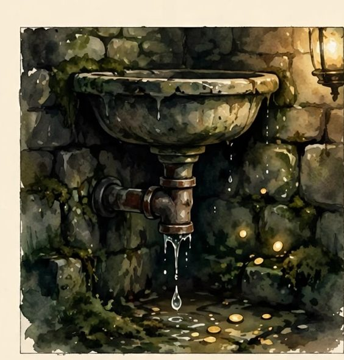
The drip beneath the sink that everyone in the house has agreed not to hear.
No plumbing is perfect, and no household's money system is watertight. There is always a joint that weeps, a tap that drips through the night, a small standing charge for a service whose name nobody remembers. The mature attitude is neither denial nor despair: leaks are a property of systems, not a verdict on their owners, and the correct response to a property of systems is a maintenance schedule.
The trouble begins with scale blindness. A drip is beneath notice; a year of drips is a reservoir. The mind is built to respond to floods and to forgive drips, and the entire commercial world knows it — which is why so many modern charges are designed as drips, individually forgiven, collectively enormous. The inspector's skill taught in this hall is therefore mostly a change of units: every recurring leak is to be read annually before it is forgiven daily.
Walk the house of your finances the way you would walk a real house in spring: room by room, hand on every pipe, unhurried. The next rooms name the usual places to put your hand.
38The Leak You Cannot See Bills You Monthly
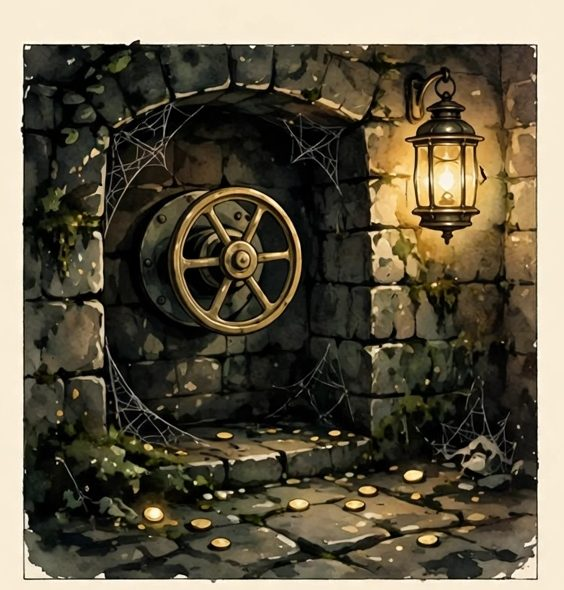
A meter turning slowly in the dark, patient as weather.
The known leak can be scheduled for repair; the unknown one repairs nothing and bills forever. Every household has a category of outflow that has never once been looked at directly — the insurance renewed by inertia, the account whose purpose expired with a previous decade, the stored payment details still quietly serving a company the household no longer uses. These are not expenses. They are absences of attention that have learned to charge rent.
Finding them requires the specific courage of room seven: looking at the whole statement, all of it, without scrolling past the embarrassing middle. The desk observes that people will cheerfully audit a stranger's accounts in a novel while treating their own as a horror text. The horror is exaggerated. What the full statement actually contains is a biography — where the current went while you were busy — and biographies repay reading even when some chapters are foolish.
Once seen, an unknown leak loses most of its power, because unknown leaks survive on never being assigned an owner or a decision. Naming it is more than half the repair.
39Friction, the Tax Nobody Voted For
Not all loss is leakage; some is friction — the heat generated wherever the current is forced through a narrow, awkward, or needlessly complicated passage. Friction has a thousand small costumes: the fee for paying, the fee for not paying, the exchange margin, the penalty rate, the afternoon spent disputing a charge that should never have existed. Each is survivable. Together they are a tax on movement itself, and like all such taxes they fall hardest on those whose channels are narrowest.
The political observation belongs to the thinker; the household observation belongs to this hall. Friction shrinks when channels are simplified: fewer intermediaries, fewer accounts, fewer currencies of obligation, paperwork that can be understood by its owner at midnight. Complexity is where friction breeds, and complexity is very often sold as sophistication by the parties who collect the heat.
Ask of every arrangement the plumber's question: how many joints does this really need? Each joint is a leak that has not happened yet and a fee that has. The simplest channel that does the work is almost always the cheapest one over a decade, whatever the brochure says about the scenic route.
40Debt as Drag
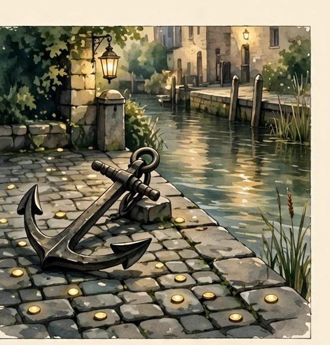
An anchor carried politely through the market: weight mistaken for luggage.
Debt, in the energy model, is drag: the force that takes a percentage of every stroke before the stroke moves you. A swimmer with a stone in each pocket can still swim — that is the seduction of it — and will point, quite truthfully, to their progress across the pool. The model asks a different question: not whether you are moving, but what the same strokes would be worth unladen, and how many seasons of strokes the stones have already consumed in interest.
Drag compounds in a way leaks do not. A leak loses the same amount each month and can be scheduled; drag grows with the load, taxes the earning that services it, and — the subtlest cost — narrows the future. Every decision in a dragged household is quietly pre-decided toward the next payment, until the calendar itself feels mortgaged.
The house's doctrine here is plain and unlyrical: drag is to be reduced before almost any other financial project is entertained, because drag taxes all the others. Not with shame, not with heroic sprints that collapse in a month, but with the steady, boring, magnificent arithmetic of paying the stone down. Hall nine will give it a step of its own.
41The Subscription That Outlived Its Welcome
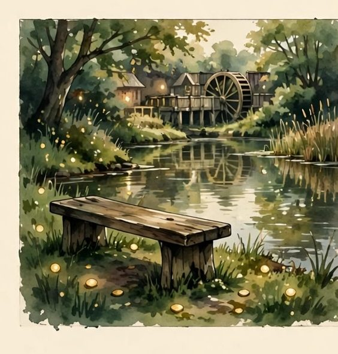
A welcome mat worn through: the guest who stayed for years.
Somewhere in almost every household's outflows sits a subscription that was invited for a free month and has now attended every month since, fed and unexamined. It is not the size of the charge that makes it the emblem of this hall — it is the completeness of the forgetting. The service is not used, not missed, not even resented. It persists because cancellation requires a decision and continuation requires nothing at all, and systems always flow toward the state that requires nothing.
The audit is famously short work: list every recurring charge, and beside each write the date it was last used on purpose. The list, honestly made, divides itself into three parts — the living, the dead, and the embarrassing — and the embarrassing part is usually the smallest, which is why the desk insists the exercise is maintenance and not confession. Nobody in this house is keeping score of anyone's foolishness. The dripping tap is not a moralist; it is just wet.
Cancel or revive, but decide. A subscription consciously kept is a purchase. A subscription unconsciously kept is a leak with a login page. The difference is entirely room seven's currency: ten minutes of attention, spent once, that go on saving money every month thereafter without further effort — the closest thing in the household economy to a perpetual motion machine.
42Fees at the Narrow Places
Rivers are free where they run wide and expensive where they are forced through gates. Whoever owns a narrow place in a money channel — the only bridge, the required platform, the unavoidable exchange — can charge rent on the current forever, in amounts too small to fight and too regular to forget. Most households meet several such toll-keepers monthly, and most have never added the tolls together, which is exactly how tolls prefer to be met.
The response is rarely a dramatic rerouting; narrows exist because geography is real. The response is arithmetic and occasional stubbornness: know what the gate costs annually, use the wider channel where one genuinely exists, and refuse the ornamental tolls — the priority fee for a queue that is not long, the insurance for a risk already covered twice — that survive purely on the traveller's hurry.
Above all, notice the asymmetry the toll-keeper relies on: the toll is collected from the flow, so it is felt least by those who never look at flows. This hall exists so that its visitors look. A toll seen clearly can be accepted with open eyes as the price of the bridge. It is only the unseen ones that are pure loss.
43The Block Called Shame
A ledger kept face-down: the heaviest block in the system is made of silence.
The most expensive block in many money systems is not made of stone or debt. It is shame: the unopened letter, the unmade call, the account whose balance is feared rather than known. Shame dams the current more completely than any creditor, because a creditor only wants payment, while shame wants concealment — and concealment forbids every remedy, including the easy ones. Whole cascades of fees and penalties, examined later, trace back to a single envelope that could not be faced in the month it arrived.
The house treats this block with particular respect because it is not, at bottom, a money problem. It is the feeling that the state of the flow is a verdict on the person, which room nine of the first hall already refused: wealth is weather, not worth. The account is a gauge, not a judge. A gauge can be read by anyone brave enough to look, and the reading, in case after case, turns out to be survivable — usually smaller than the dread, almost always more workable than the silence.
If any room in this hall deserves to be visited twice, it is this one. Every other leak in the system can be patched by technique. This one is patched by a single act of looking, and everything downstream of it gets cheaper the moment the looking is done.
44The Block Called Pride
The gate the owner will not open because he built it himself.
Pride blocks differently from shame: not by hiding the figures but by defending them. It is pride that keeps the household in the house it cannot carry because the street must not know; pride that refuses the smaller car, the plainer coat, the honest sentence 'that is beyond us this year.' Where shame says do not look, pride says do not be seen looking — and the current pays for the performance monthly, in the currency of everything the performance costs to maintain.
The irony the desk records without pleasure: the audience for the performance is mostly imaginary, and the real neighbours, consulted anonymously in every age, report that they think about our outflows roughly never. The performance plays to an empty theatre and charges full price for the seats.
Lowering a standard of display is not a defeat in the energy model; it is a rerouting — current withdrawn from theatre and returned to reservoir, warmth, and sleep. The households that make the change describe a sensation the house has learned to recognise on sight: embarrassment for about a fortnight, and then a lightness they keep trying to give away as advice at dinner parties.
45Money Stuck in the Wrong Shape
Money has shapes, and the shapes have speeds. Cash is water. A house is ice. A collection, a business, a promise of payment next spring — each is the same value frozen at a different temperature, and the mismatch between a household's obligations (which arrive liquid, on dates) and its assets (which may be frozen solid) is one of the classic ways to be simultaneously rich and unable to pay for dinner.
The model gives this a clean name: the money is not gone, it is stuck in the wrong shape. Thawing takes time, cost, or both, and it always takes longer than the emergency allows. Hence the old, unglamorous wisdom that hall six formalises: some portion of the store must be kept liquid on purpose, at a deliberate sacrifice of return, because liquidity is not a yield. It is a season of the year you have agreed to keep indoors.
When you assess a household's position, then, do not ask only how much. Ask: in what shape, at what temperature, reachable in how many days? A reservoir you cannot open in a storm is a painting of a reservoir.
The Money Energy Desk
One desk receives all correspondence for this house — questions, corrections, flood marks from your own bank. It is read in the order it arrives. The desk gives no financial advice; it keeps the house.
46A Leak Is Information, Not a Verdict
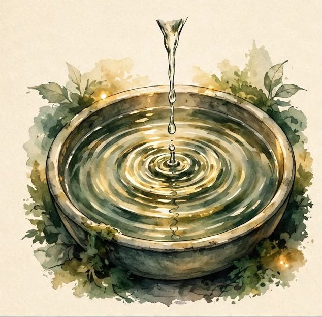
The drip, located and labelled: it looks smaller already.
Here is the reframe on which the whole inspection hall stands: a leak is information. It tells you where the system's design no longer matches the household's life — the service subscribed in another era, the habit priced for another income, the obligation inherited from a plan that has quietly been abandoned. Read that way, the leak list is not an indictment; it is the most current autobiography the household owns, written in small print by its own past decisions.
This is why the house forbids drama during the audit. Self-contempt is just friction wearing a hair shirt; it consumes the attention that the repairs need and produces nothing except a resolution to be a different person by Monday, which is the least reliable building material known. The inspector's tone — and the desk models it deliberately — is the plumber's tone: found it, noted it, sized it, scheduled it, moved on.
Households that learn to receive a leak as information acquire a permanent advantage over those that receive it as shame: they look more often. Frequency of looking is the whole game. The annual, dreaded, weekend-consuming audit loses to the monthly ten-minute walk around the pipes, every time, the way regular rain loses to a flood only in the poetry.
47Patching Without Drama
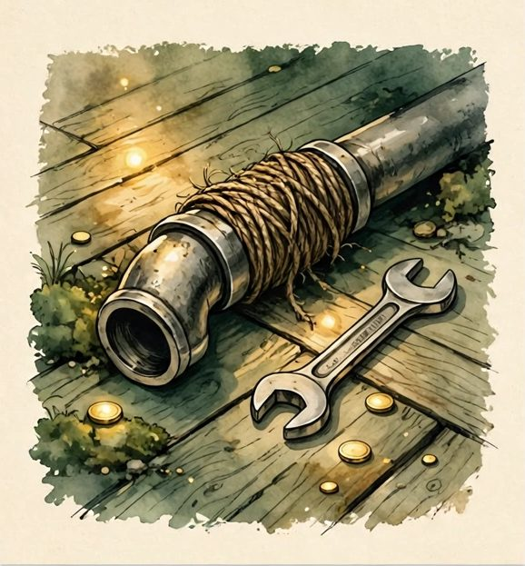
A joint re-wrapped, a wrench laid down: the repair was smaller than the dread.
The repairs themselves, when finally attempted, have a uniform character that veterans of this hall will recognise: they are embarrassingly small. A phone call. A form. A setting changed in a menu. The cancellation that loomed for a year consumes eleven minutes, three of them on hold listening to music the household will not miss. The dread was the leak's security system, and like most security systems it was protecting something far less valuable than it cost to guard.
Patch in the right order: biggest first, while the attention is fresh, because the arithmetic of leaks rewards the top of the list grotesquely more than the tail. One repaired major leak funds the patience for the minor ones. And write down what was saved, in annual terms, on the map from room twenty-four: the audit should end with a number the household can be pleased about, or the next audit will be postponed by exactly the mechanism this hall exists to dismantle.
Then stop. Perfection is a dam of another kind — the all-or-nothing inspection that finds forty leaks, fixes none, and concludes the system is hopeless. Three repairs a season, kept up, will re-plumb a household in two years. That is not a promise. It is a pace.
48The Audit of Dripping Taps
The fourth hall ends with a ritual, offered for adoption: the audit of dripping taps. Once a season, walk the whole system with the map of inflows in one hand and the last full statement in the other. List every outflow that repeats. Mark each as work, warmth, waste, or unknown — and let the unknowns be the season's homework, no more than three, investigated without self-reproach and decided without delay.
Keep the old audits. A series of them is the closest thing a household can own to a tide table of itself: the seasons visible, the repairs accumulating, the same leak returning in new costume — which is itself information, usually about a habit, and habits are hall eight's weather to discuss. The point of the ritual is rhythm, not rigour. A system inspected quarterly at walking pace outperforms a system inspected once, heroically, and then avoided for a decade.
Close the hall and wash your hands. The next five halls leave the losses behind and turn to the constructive half of the model: how the charge is honestly generated, kept, spent, and given. The river, inspected, can now be worked with. That is a much better subject, and the house has been looking forward to it.
49Earning Is Making Something Flow Toward You
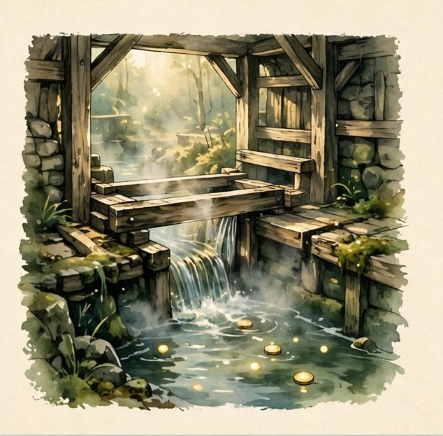
The sluice-gate of the workshop, opened by work each morning.
Earning, in this model, is the deliberate creation of an inflow: value made on your side of the gate that someone on the other side is glad to pay to receive. Strip the poetry and the sentence still stands. Every honest income in the world is that event, repeated — a thing or an hour or a skill crossing the boundary, current returning the other way. The person who understands their earning as an event they cause, rather than weather they receive, negotiates differently, builds differently, and weathers dry seasons with a map in hand.
The event has three parts, and weakness in any one of them throttles the whole: the value itself, real and needed; the channel, by which it reaches the buyer; and the price, at which the exchange clears. People overwhelmingly labour on the first and neglect the other two, then wonder at the modesty of the flow. A fine product in a broken channel at a frightened price is a spring behind two dams.
Hall five walks the generating half of the circuit. It will not tell anyone what to sell — the house has no merchandise but attention — but it will walk the physics: turbines, heads of water, steepness of channel, and the protection of the source that does the generating, which is, in the end, a person.
50Work as a Turbine
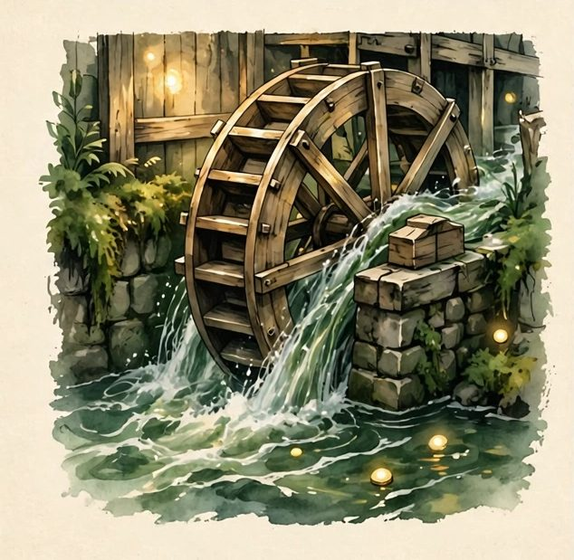
The great wheel at work: effort where the current is strongest.
A turbine does not create energy; it converts a flow that already exists into a form that can be used. Work is the household's turbine. The flow it converts is the world's ongoing need — for food, shelter, mending, beauty, transport, answers — and the conversion is the job. Seen this way, the question 'how do I earn more' splits into two cleaner questions: is my wheel in a strong current, and is it shaped to catch the current that passes?
The first question is about position, room thirty-three's lesson, and it can sometimes be answered by moving the wheel rather than enlarging it. The second is about craft: the wheel's blades, its bearings, its maintenance. Both questions are more useful than the undifferentiated plea for more water, because both can be acted on this season, by the wheel's owner, without waiting for the climate to change.
And a turbine has limits printed on its housing, which workers ignore at the price of the machine. The wheel that is run past its rating does not produce extra seasons of power; it produces one bright season and then repairs. Hall five will return to the manufacturer's plate when it discusses burning the source.
51Skill Is a Steeper Channel
Two workers sell the same hour and receive different currents, and the difference is rarely effort. It is gradient. Skill is the steepness of the channel between what the world needs and what one pair of hands can do: the steeper the drop — the rarer, deeper, better-proved the ability — the more energy each unit of passing time delivers. Effort multiplies; gradient transforms, which is why a season spent deepening skill can out-earn a decade spent merely lengthening hours.
The practical reading is not 'learn something, anything.' Gradient is specific. It is the depth in one channel that the current actually uses: the qualification the market at your gate is short of, the mastery your existing buyers would pay to keep. Shallow learning across ten channels is a delta, pretty and unnavigable. Depth in one is a millrace.
Notice, too, that gradient is built exactly like room fifteen's dug spring — with attention paid in advance, before any flow justifies it. The house does not find this coincidence surprising. In this model, nearly everything valuable is built that way, which is why the underneath currency is the one that matters.
52Honest Charge: The Price of a Thing
The tag tied honestly to the goods: a price is a sentence said out loud.
A price is not a number; it is a statement about flow. It says: this much current, from your reservoir to mine, balances the value crossing the other way. Set it from fear and the statement stammers — the seller apologises in arithmetic, the work is quietly resented, and the channel, starved, is maintained at the standard of its income, which is to say badly. The buyer is not served by the stammer either: underpriced work is the first casualty of every busy season, and everyone who has been the cheapest supplier's forgotten client knows the smell of that particular smoke.
Charging honestly is therefore a form of channel maintenance, not vanity. It funds the watershed — the tools, the rest, the refusal of bad work — that keeps the source producing. The house notes, for the record, that nearly every discussion of pricing is secretly a discussion of self-respect conducted in numbers because numbers feel safer than the real subject.
None of this instructs anyone in what to charge; the desk is not an agency. It only insists the price be a sentence the seller can say aloud without flinching. The current can tell when you flinch. So can the buyer. So, in the end, can the work.
53Raise the Head, Not Only the Hours
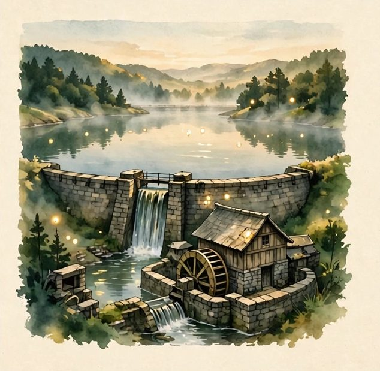
The high reservoir above the mill: pressure is a decision made earlier.
Millers distinguish two ways to get more power from a stream: run it longer, or raise the head — the height from which the water falls. Hours are the first way, and they are the one every beginner reaches for, because the lever is visible and the cost is deniable until the season's end. The head of water is the second: accumulated position, reputation, stored work, a name that arrives before its owner does. It is built slowly and spends fast, and while it lasts, the same hours strike with several times the force.
Raising the head is unglamorous in the precise way of all compounding things: work done slightly better than required, promises kept in the small denominations, the file of finished things growing in a drawer nobody sees. It cannot be rushed, which is why it is so rarely the strategy of the impatient, and why its owners are so hard to compete with. You cannot buy another man's head of water. You can only admire it, or begin your own, years before you need it.
The counsel of the room is balance: work the hours you have at the gradient you have built, and let some honest fraction of every season go to raising the head. The fraction need not be large. It needs to be regular, defended, and never — this is the whole law — spent on applause instead.
54Earning Without Burning the Source
Every generating system has a source that can be spent: the fisherman's grounds, the craftsman's eyes, the trader's nerve, the parent's sleep. Money earned by consuming the source itself is not income in any honest accounting; it is liquidation wearing income's clothes, and the books balance only because the source is not carried on them. The energy model, which counts the watershed as an asset, refuses the disguise: current drawn by damaging the spring is revenue this year and a dry map next year.
The signs are familiar to anyone who has done it: the skill going stale because every hour is billable, the health deferred like a subscription, the relationships thinned to customers. Each was a small withdrawal from the watershed, entered nowhere. Then one season the flow drops and the household stands amazed at the ingratitude of the river it has been mining.
Sustainable earning is not softness; it is engineering. Turbines are greased, fields are fallowed, sources are rested — not because the machine has feelings but because it has a future output curve. The person is also a machine in this single respect, and the house will keep saying so until the metaphor is no longer needed.
55The Second Stream
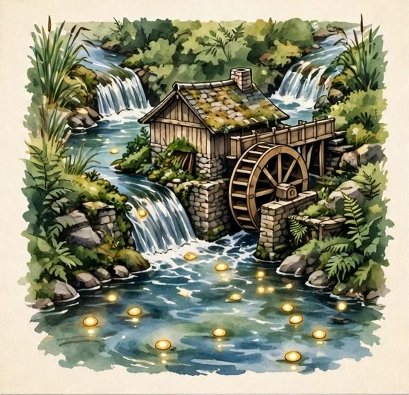
A second channel joining the first below the mill: the water doubles, the banks hold.
The second stream is the classic answer to a single source's fragility, and hall two already praised a valley of many springs. Hall five adds the builder's caution: a second stream is dug with the same attention as the first, in the hours the first does not use, and it is allowed — this is where most attempts die — to be small for a long time. The retired teacher's weekend workshop, the rented-out room, the file of designs that sells while its maker is at the main work: none of these began as a river, and any of them can become the channel that carries the household through the year the first stream fails.
Beware the glamorous error: diverting the main current to dig three new channels at once, and ending with four dry ditches and a story. Sequence is the whole craft. One channel, dug to water, then the next. Attention is a single digging crew, however many maps it owns.
And notice what a working second stream changes beyond arithmetic: the household's posture toward the first. Work that can be survived without is work that can be priced honestly, refused when it turns bad, and enjoyed when it is good. The second stream's largest yield is often not its flow. It is the first stream's freedom.
56Wages, Fees, and Rents: Three Shapes of Current
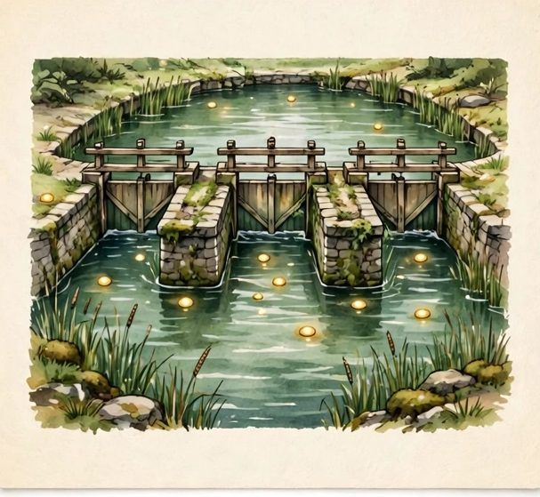
Three gates, three rhythms: the wage, the fee, and the rent enter differently.
Currents arrive in shapes, and the shapes deserve names because households mismanage them by treating them as one. The wage is a canal: regular, bounded, someone else's gate, supremely budgetable and supremely dependent. The fee is a mill-stream: episodic, earned per job, yours to schedule and yours to starve in a distracted month. The rent — from property, rights, or anything the world pays to use — is the artesian kind: it rises from an asset while its owner sleeps, and it is the most romanticised and least understood of the three, since the asset had to be built, bought, and defended for years before its first quiet litre.
None of the shapes is morally superior; each has a temperament and a failure mode. Canals close when companies do. Mill-streams follow their owner's health. Artesian flows stop when the asset is neglected, and they seduce their owners into exactly that neglect. The craft is in the combination and in matching storage and spending to the shapes actually arriving, not the shape one would order from a catalogue.
A household fluent in its own shapes stops asking the unanswerable 'is my income good' and asks the answerable trio instead: how regular, how dependent, how maintained? Those three answers are a risk assessment, a plan, and usually a relief.
57The Craftsman and the River
There is an old figure this house keeps returning to: the craftsman whose workshop stands by the river he serves. He did not choose the river's moods, but he chose his bank, his wheel, his prices, and the standard below which his work does not leave the shop. His earning is not the largest in the valley. It is the most legible — he can say, of every unit of current, where it came from and what it cost to generate, including what it cost him.
Legibility is an underrated financial asset. The craftsman knows his true rate because he knows his true costs, including the slow ones: tool wear, learning, rest. Enterprises far larger than his routinely cannot say as much, and price accordingly — by imitation, by hope, by fear — and then call the result a market. The market is often just a crowd of guesses that have agreed to stop arguing for the day.
The point of the room is not nostalgia for small workshops. It is that legibility scales down perfectly and up imperfectly, so the household has an advantage the corporation cannot buy: it can actually know its own river. Use the advantage.
58Do Not Poison Your Own Spring
Clear water below the workshop: the source kept cleaner than the law requires.
Every watershed has its poisons, and for the earning household the common ones are not dramatic. They are the client whose money requires the work to be slightly dishonest; the shortcut that bills the future for the present; the income that can only continue while the earner does not look at it directly. Each is a good flow by the gauge and a contamination by the sample, and contamination has the watershed's usual property: it is discovered downstream, late, by other people.
The costs arrive disguised as other problems — the reputation that stops travelling, the sleep that stops working, the household's own members declining the earner's help because something about the money feels handled. By the time the sample is taken, seasons of current have passed through the poison, and the cleanup is priced accordingly.
The house's rule is upstream thinking, one last time: judge a source not only by its flow but by its watershed effects — what it does to the skills, the name, and the person who will still be standing there when the flow, like all flows, changes. Money that costs the source more than the source can regenerate is not earning, whatever the gauge says. We have a word for it from room fifty-four. It is liquidation.
59Earning Is Half the Circuit
The wheel, the race, and the return channel: half a circuit lights nothing.
A turbine spinning in an open frame, its generated current grounded into the earth and lost, is the emblem of a common tragedy: earning without the rest of the circuit. The wheel turns, the money arrives — and there is no reservoir to catch it, no honest channels to carry it, no load chosen for it to serve. Such households earn respectably for decades and keep almost nothing, and their bewilderment is genuine, because the only part of the system they were ever taught to see was the generating part.
The circuit completes or it does not work. Current must have somewhere to be stored (hall six), something deliberate to do (hall seven), and a rhythm to move in (hall eight). A deficit in any of the three presents identically — as if the earning itself were insufficient — and sends the household back to the turbine for more hours, more gradient, more burn, in service of a system whose leak was elsewhere all along.
Hence the house's ordering of its halls, which is a diagnostic order: principle, sources, circulation, leaks — and only then earning, keeping, spending, seasons. The visitor who jumped straight to this hall is invited, with respect, to consider that the jump is itself a finding.
60The Dignity of Being Paid
The hall on earning closes with the dignity of the transaction itself, because a model of money that cannot honour being paid will subtly teach its readers to apologise for the central event of their economic lives. To be paid is to have one's work accepted by the world at the stated price, in the open, without favour. There is nothing grubby in it. The grubbiness, where it exists, lives in dishonest charge and poisoned springs — specific failures, already named — and not in the receiving of the current.
Practical consequence: receive payment the way the miller receives water, as a professional receives a working material. Invoice plainly. State terms once and clearly. Do not discount out of embarrassment or pad out of anxiety. And when the current arrives, let it be entered in the map with the same respect as the sources in hall two — because it is one, the one the household built with its own hands.
Beyond this door, the subject changes from generating to keeping: the reservoir, the battery, the stored year. It is the quietest hall in the house and, the desk believes, the one its visitors will re-read most — usually at 3 a.m., and the house is glad to be open.
The Money Energy Desk
One desk receives all correspondence for this house — questions, corrections, flood marks from your own bank. It is read in the order it arrives. The desk gives no financial advice; it keeps the house.
61Storage Is a Virtue with Bad Publicity
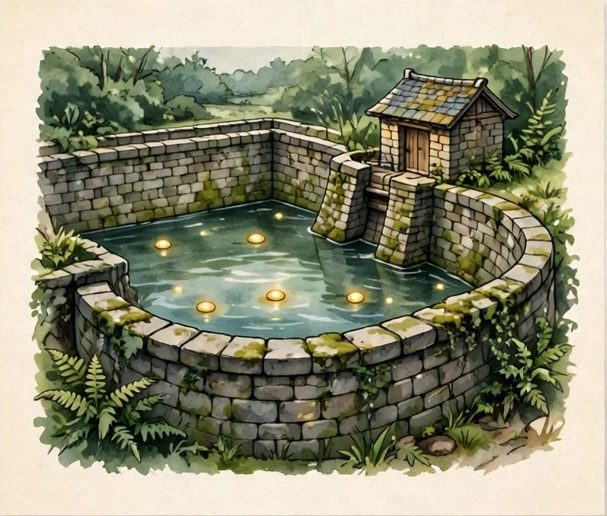
Stone walls, still water, a roof against the dry season.
Begin the defence: storage gets a bad name because its parasites — the miser, the hoarder, the dam of room thirty-one — are memorable characters, while its heroes are not characters at all. The reservoir has no anecdotes. Nothing dramatic ever happens at a well-kept reservoir; that is precisely its achievement. The household with a stored season behind it meets the same world as everyone else and experiences it as a noticeably calmer place.
The energy model states the virtue plainly: storage converts uncertainty about timing into certainty about capacity. Income arrives on the sources' schedule; life submits its bills on its own. Between those two calendars stands the reservoir, absorbing the difference, and every unit in it is a small declaration that the future's surprises will be met from strength rather than from credit.
This hall walks the keeping of money the way the previous ones walked earning: as engineering with a human face. How much to store, in what shape, guarded how, and at what cost — and the disposition that makes a good keeper, which the final room will name as the rarest financial temperament of all: calm.
62The Reservoir behind the House
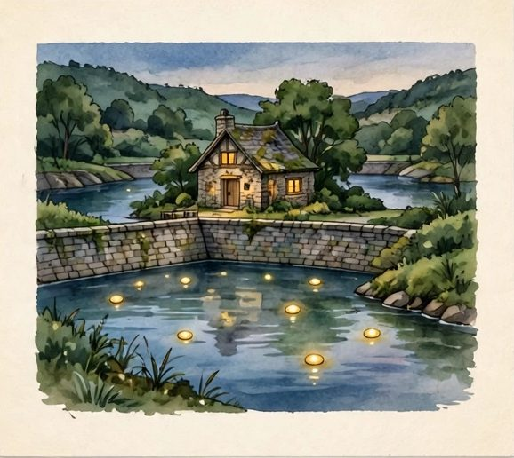
The reservoir behind the house at evening: unglamorous, indispensable.
Every wise household, in the centuries before accounts were apps, kept its store behind the house where it could be seen from the kitchen window: the woodpile, the water butt, the root cellar. Visibility was the management system. You knew your position at a glance, in the doing of ordinary days, and the store's level quietly governed a hundred small decisions without a single meeting being called.
The modern reservoir has lost its window. It lives as a number inside a device, consulted in moods — anxiously at 3 a.m., triumphantly after payday — rather than in the steady peripheral way the woodpile was consulted. Some of keeping's modern difficulty is exactly this: the store must be re-imagined deliberately, given a place in attention, or it will be managed by the two worst managers available, which are panic and euphoria.
The practical translation costs nothing: know the level, in round honest numbers, the way you know the weather. The keeper's calm of room seventy-two is not a personality trait. It is the downstream product of a store that is looked at regularly, in daylight, without theatre.
63A Battery Is a Promise to Your Future Self
A battery is a promise disguised as an object: work done in the past, held, so that work can be done in the future at the moment of choosing. Savings are that promise at household scale. The emergency reserve — the least glamorous battery in the house — is a promise made by the present self to every future self who will have a bad month: you will not have to borrow your dignity back at interest. You will be met by your own stored work, arriving precisely when the world's terms are worst.
Framing the reserve as a promise rather than a number changes how it is built. Numbers invite negotiation ('is it really needed at that size'); promises invite keeping. It also explains the strange flatness people report when the reserve is spent, even wisely: a promise has been discharged, and the battery must be recharged before the household feels like itself again. That is not irrationality. That is the correct sensation, and the correct response to it is a plan, not a purchase.
Recharge it the way it was built: first, automatically, and before the discretionary currents resume their old widths. The future self who is relying on it cannot attend the meeting. Send the money as their proxy.
64Keeping Is Not Hoarding
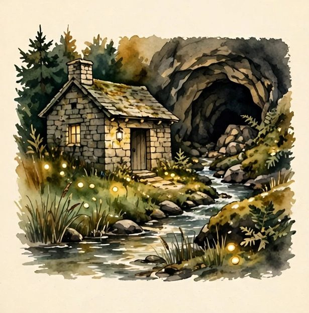
Two stores, two intentions: the granary with a plan, and the cave without one.
Because hall three drew the line at the dam, this room draws it again from the storage side, with criteria. Keeping is storage with a name and a season attached: this is for the roof, this is for the lean months, this is for the chance that must be seizeable in cash. Hoarding is storage whose label has worn off — kept because keeping is what it does, defended by a feeling that any release is a beginning of ruin. The test is a single question, asked of any portion of the store: what are you for? An answer, even a humble one, makes it keeping. A tightening of the chest makes it a dam.
The distinction matters because the remedies are opposites. Keeping that is too small is cured by building channels to the reservoir — the automatic transfer, the first charge on every inflow. Hoarding is cured by nothing hydraulic at all; it is cured by deciding, in writing, what enough is, which is room sixty-five's whole subject, and by the slow discovery that the released money did work in the world and the sky stayed up.
Most households contain both phenomena in different accounts, sometimes in the same week. The house does not ask anyone to be only one kind of keeper. It asks that the two be told apart, because they cannot be managed with the same tools.
65How Much Charge Is Enough
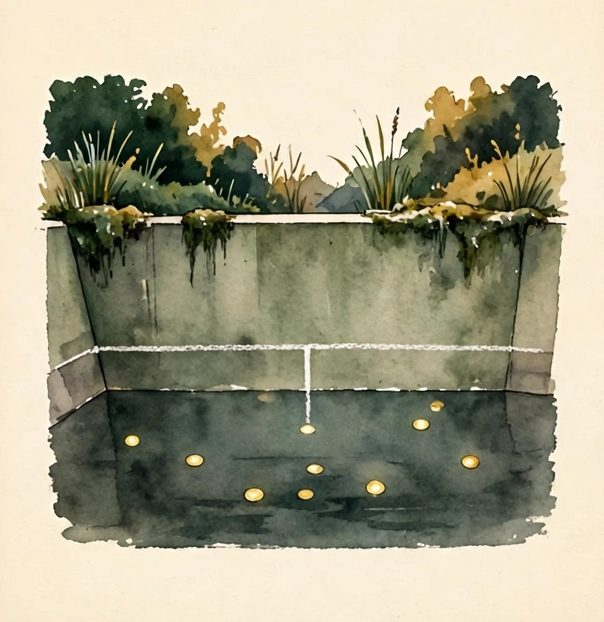
A chalk line on the reservoir wall: the level that has a name.
The hardest quantity in the whole system is not income, price, or yield. It is enough: the size of store at which a household may honestly relax its grip. Set too low, enough is a fiction that the first emergency exposes. Set at infinity — the quiet default of the anxious — enough never arrives, and the reservoir becomes the dam of room sixty-four by the slow route of never being declared full. The number must therefore be chosen, in daylight, by criteria, and defended against both fear and appetite, which will each try to move it.
The criteria are household facts, not commandments: how many shapes of current feed you (room fifty-six), how variable they are (hall eight), what the fixed obligations are, what the realistic emergencies look like in your actual valley. From these, a household can derive its figure the way it would size a water butt from a roof and a climate: roughly, honestly, and revisably.
Then the essential act: when the store reaches the figure, say so. Mark it. A reservoir acknowledged as full releases all further inflow to the pleasant problems of hall seven — spending and giving with intention — and the household discovers what the model has been promising since the first hall: that enough is a place, and it can be lived in.
66The Slow Battery and the Fast Battery
Not all stored charge is meant to be reached at the same speed, and a well-run storehouse sorts its batteries the way a kitchen sorts its shelves. The fast battery is the near reserve: reachable today, sized for the ordinary ambush — the boiler, the bill that was misfiled by everyone including fate. The slow batteries sit deeper: the season's reserve, the opportunity fund, the long accumulations whose whole virtue is that they are slightly troublesome to reach, because trouble is a lock that keeps a moment's mood out of the storehouse.
Confusing the two speeds is the standard storage error. Money meant to be slow kept fast gets spent by proximity; money meant to be fast kept slow gets reached for through credit while it sits, frozen, being virtuous — the wrong-shape problem of room forty-five, met again in the cellar. The shapes audit belongs in every seasonal review: is each store at the temperature its purpose requires?
The sorting is cheap and the benefit is calm. A household whose fast battery is honestly full stops experiencing small emergencies as financial events at all. They become errands. The house knows of no better return on stored money than that demotion.
67Keeping Without Freezing
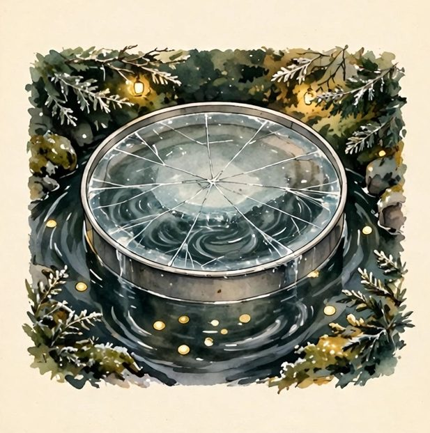
A surface skin of ice on the tank, the water beneath it moving and alive.
Keeping has a failure mode opposite to leaking: freezing. A store kept so cautiously that it can never be used — where every withdrawal requires a committee of anxieties and the money is always, somehow, for a worse day than this one — has left the circuit as surely as if it had been spent. It does its owner the single service of being counted, and counting, as room twenty-five observed, is not work.
The thaw is a design problem, not a character transplant. Stores freeze because their purposes were never written down, so every use feels like theft from an unnamed emergency. The remedy is the label from room sixty-four, applied completely: each portion of the store gets its purpose and, where honest, its expiry — the condition or date at which it is to be used or consciously renewed. Money with a written purpose can be spent on that purpose without drama, which is the entire difference between a battery and a monument.
Keep some frost, by all means; the deep stores should be slow. But frost belongs on the surface of the system, a discipline at the gate — not through its heart. A household should be able to name, without hesitation, what part of its store is for living. If it cannot, the store is not keeping the household. The household is keeping the store.
68Records: Knowing the Water Level
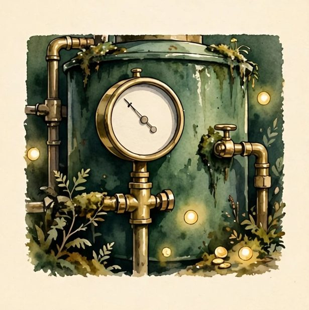
The keeper's gauge, read at the same hour on the same day each month.
Every technology of keeping in this hall reduces, in the end, to one instrument: the record. Not the app or the ledger book — the habit of a true number, known. Water-keepers in every age have scratched the level on the tank wall; the scratch is the whole science. A household that knows its reservoir's level, and the direction and rough speed of its change, possesses most of what financial experts sell as insight, and it possesses it without fees.
The record's power is that it ends arguments with feelings. 'We are haemorrhaging money' and 'we are basically fine' can occupy the same kitchen for years; the level, trended over a season, settles the question in a sentence. Likewise the record acquits: many a household has discovered, gauge in hand, that its position is better than its mood, and the discovery is worth money, because moods spend.
Keep the record where it will actually be read — the standard is room ninety-seven's wall, not a cathedral archive — and read it on a rhythm: the same day each month, the way tides are tabled. Records kept in panic are weather reports from inside a storm. Records kept in rhythm become climate, and climate is what wise households plan by.
69The Stored Year
The farmers who anchor this house's imagination measured wealth in the stored year: the grain that carries the household from harvest to harvest, with the margin that turns a bad season from a catastrophe into a story. The stored year is the deepest form of the battery — not a buffer against surprise but a complete independence from the immediate harvest — and while few modern households will literally store twelve months, the concept recalibrates ambition in a healthy direction: from this month's level to the question of seasons.
Its psychology is the opposite of the payday cycle. A household living harvest-to-harvest experiences time as a corridor that is always narrowing; a household with a stored year experiences the same calendar as a landscape it owns part of. Decisions change species at that point. Work can be chosen. Prices can be refused. Emergencies become errands, as room sixty-six said of small ones — and so, remarkably, do most large ones.
Build toward it at the pace of the possible. The stored year is not a test to pass this spring; it is a direction to face. Every month of it that gets stored is a month of the future that has been prepaid in calm, and the interest on calm, compounded over a working life, is the largest return this house is willing to describe without blushing.
70What Quietly Drains a Battery
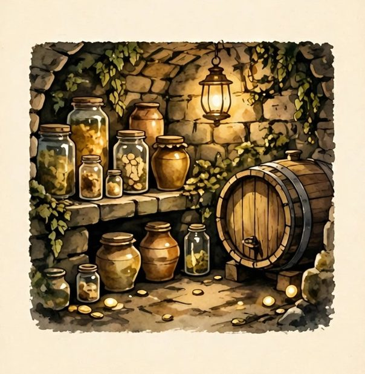
The cellar in late summer: even good stores lose a little to the air.
No storage is free of entropy, and the keeper who is not told this will learn it from the figures, with interest. Money stored as money thins slowly: prices rise around it, and a unit kept under the mattress for a decade returns able to do noticeably less work than the unit that went in. The old word for the mattress problem is inflation; the model calls it evaporation, because the store loses substance to the air even behind a locked door, and the loss is nobody's fault and everybody's arithmetic.
Evaporation is not an argument against storing — a reservoir that loses a little to the sky still beats a drought — but it is an argument for storing deliberately: in shapes considered for their purpose, their temperature (room sixty-six), and their season. It is also the point at which many guides begin shouting recommendations. This house does not. What a household should do about evaporation is a question for its own circumstances and, where the sums matter, for qualified advice it chooses itself. The model's contribution ends at making the evaporation visible, sized, and part of the plan rather than a surprise in it.
There is a second, quieter drain this room should name: neglect itself. Accounts forgotten, terms unreviewed, the store administered by a company that has changed hands twice. Evaporation plus neglect will empty a cellar politely over a decade. The gauge habit of room sixty-eight is the whole defence, and it costs ten minutes a month.
71Teaching the Battery to the Next Keeper
The old keeper showing the young one where the gauge-marks are cut.
A store, like a spring, outlives its first keeper, and the handover is a discipline of its own. The next keeper — a partner who never ran the system, a grown child, an executor reading a folder in a hard week — needs more than the location of the accounts. They need the map: which battery is which, what each is for, what the rhythms are, what 'enough' was decided to be and why. A store without its map is a riddle left as a legacy, and riddles are a poor gift to the grieving.
Write it down while it seems unnecessary; that is the only time it can be written calmly. One page, kept with the important papers and its existence mentioned aloud: the stores, the shapes of the inflows, the standing payments, the keeper's few hard-won rules. Room one hundred and eight will make this the final step of the twelve, because a practice that cannot be handed over is not finished — it is merely uninterrupted so far.
There is also a teaching that precedes any handover: let the next keeper watch the gauge being read. Competence transfers by accompaniment better than by document. The document is for the day accompaniment is no longer possible, which is precisely the day it will be read with gratitude.
72The Keeper's Calm
The hall of keeping ends where its doctrine was always heading: the keeper's calm. It is not the calm of the rich, which is often just the dam's anxiety with better furniture. It is the calm of the gauged store, the named purposes, the sorted temperatures, the known seasons — the calm of a system whose owner can answer the three questions of room fifty-six about everything they hold: how regular, how dependent, how maintained. Such a keeper can hear bad news, including market news, the way a reservoir-keeper hears a storm forecast: as weather to be noted against a level that is known.
Calm, in this house, is a financial instrument. It prevents the panic sale and the euphoric purchase, which between them cost households more than any leak in hall four. It allows negotiation without desperation and generosity without fear. It cannot be bought directly, which is why it is rarely advertised; it accrues, like the head of water in room fifty-three, to those who do the slow things regularly.
From here the river leaves the storehouse and goes back to work. Hall seven is about the discharge: spending and giving, the moment the stored energy becomes light and heat in the world. It is the hall the whole system exists for, and the house lights its lamps for it.
73Spending Is Discharge with a Direction
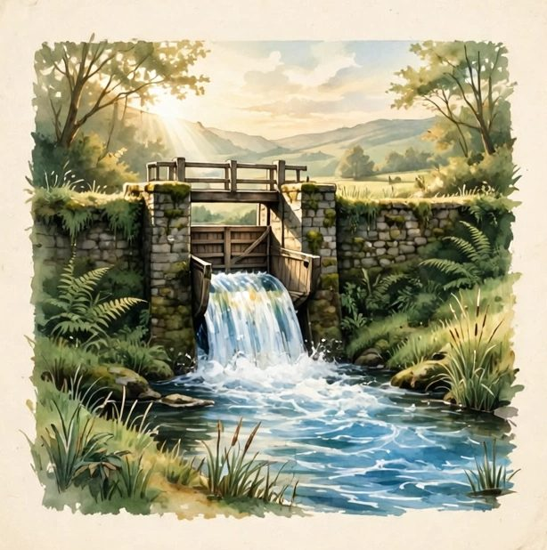
The gate opening in the morning: discharge is the purpose of the store.
A battery that never discharges is a paperweight, and money that is never spent is a rumour. Spending is not the regrettable tax on keeping; it is the event the whole system exists to produce — stored work, released at the chosen moment, to do work in the world: the roof repaired, the table set, the journey taken, the tool bought that makes the next decade's earning possible. Hall seven therefore refuses the tone of confession. The question is never whether to discharge. It is whether the discharge is aimed.
Aim is the entire ethics and craft of spending in this model. Current released toward a chosen load lights something: warmth, capability, memory, another person's source. Current released without a load becomes heat without work — room eighty's subject — and the spender feels the difference immediately, in the specific flatness that follows unaimed spending, which no quantity of it seems to cure.
So the hall's method is a single habit of aim, practised at every scale: before the discharge, name the load. Not in a form, not in a ledger of sins — in a sentence, to oneself, at the moment of the gate. The sentence is allowed to be 'pure pleasure, deliberately.' Pleasure aimed at is a load. Pleasure stumbled into is weather. The gate should know the difference, because the reservoir certainly does.
74Spend on the Load That Matters
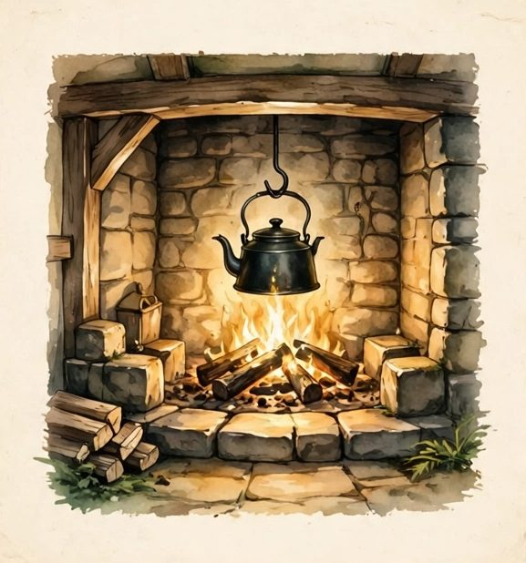
The hearth end of the house first lit, the far rooms in their turn.
If aim is the craft, priority is its order of service. The loads are not equal, and the discharge that ignores their ranking discovers the error seasonally: the brilliant purchase maintained while the basic one went begging, the far rooms lit like a theatre while the hearth stood cold. The house's ordering is deliberately unglamorous — shelter, food, warmth, health, the tools of the work, the obligations honestly incurred — before the whole shining catalogue of the optional. Not because the optional is wicked, but because a system that serves the optional first will serve the essential eventually, in a panic, at penalty prices.
Notice that this ordering is about sequence, not about virtue, and it reverses nothing in hall five's doctrine. It is a flow order, the same one a reservoir-keeper uses in a dry month: the house's own fields first, then the mill, then the fountain in the square. When the rains are fat, the fountain plays daily and nobody sensible begrudges it. The order only shows its worth in the lean season — which is to say, exactly when improvising it is hardest.
Run the ranking once, in writing, in a fat season. Lean seasons are for executing rankings, not for composing them, as every army and every grandmother has always known.
75The Generous Circuit
Now the circuit completes itself, and the model shows its best trick. Spending aimed at another person's source is not the end of your current; it is the current entering a larger system in which you also live. The wage you pay becomes a source. The fair price you do not haggle into dust becomes a craftsman's reservoir. The generosity hall will treat giving on its own terms in a moment, but even ordinary commerce, done at honest prices with prompt payment, is circulation with a conscience built into the plumbing — room twenty-eight's declaration, repeated daily at small scale.
This is not a counsel to overspend for virtue's sake; a circuit overloaded at one node browns out the whole house. It is a counsel to notice that the discharge decision has two ledgers: what the purchase does for the buyer, and what the payment does in the system. Sophisticated spenders keep both, and find — this is the trick's payoff — that the second ledger often arbitrages the first: the slightly dearer channel that keeps a good supplier alive is, across a decade, the cheaper one.
The generous circuit is not a separate economy for saints. It is the same river, with the spender awake at the gate.
The Money Energy Desk
One desk receives all correspondence for this house — questions, corrections, flood marks from your own bank. It is read in the order it arrives. The desk gives no financial advice; it keeps the house.
76Giving Is Circulation at Its Purest
The fountain in the square: given water, still water, doing its work in public.
Giving is circulation at its purest because it is the one flow that asks for no return channel and yet sustains the system it leaves. In pure energy terms a gift is a transfer with the meter removed: the giver's reservoir falls, the receiver's rises, and the only thing created in the transaction is the relationship — which, as room thirty-five recorded, is the oldest plumbing there is and the kind that functions when all the modern kinds fail.
A gift economy runs underneath every money economy like groundwater under a city, and households tap it constantly without drawing it on any map: the meal, the lift, the loaned tool, the watched child, the introduced name. The wise household counts this groundwater in its true position — not as income, never as income, but as the reason its money economy needs to be less defensive than the maps suggest. People with deep groundwater can run leaner reservoirs in coin, because they are not, in fact, storing against every emergency alone.
The desk adds the corollary for the proud: a gift refused is groundwater declined. Receiving well is part of the circuit's maintenance, and hall seven counts it a skill, not a weakness. The river is not diminished by being allowed to flow toward you.
77A Gift Is Current with the Meter Removed
A coin crossing at the bridge with no toll-keeper awake.
Of all the forms money takes, the gift is the only one that travels without a meter, and the absence of the meter is the point. A loan watches the calendar; a payment watches the goods; a gift watches nothing. It is current released on trust in the widest sense — not trust that it will return, but trust that the world in which it lands is better with it landed. That is why gifts, even small ones, carry an emotional voltage out of all proportion to their size: they are the proof, issued in spendable form, that the giver's system has surplus and is not afraid.
The corollary is about aim, again. A gift aimed like a payment — at a specific dry field, a specific person's specific season — lands with a force that broadcast generosity rarely matches. The art is not in the amount. It is in the accuracy: the right current, to the right bank, in the right week of the receiver's year. Accuracy requires the underneath currency again, attention, paid to other people's weather.
And the house insists on the sentence nobody puts on cards: the gift is complete at the giving. Anything that returns is a new event, belonging to the receiver's freedom. A gift with a return expected is a loan in fancy dress, and the current can always tell the difference, even when the giver cannot.
78Charity Begins Upstream
Charity, in the watershed sense, begins upstream — before the emergency, at the level of the system that produces emergencies. The household version is modest and concrete: generosity directed at sources rather than only at symptoms. The meal for the neighbour in the bad month is good; the introduction that rebuilds the neighbour's inflow is water delivered to the headwaters, and it keeps flowing after the meal is a memory. Both are giving. They operate at different altitudes, and the higher one is usually cheaper, because it is made of attention and standing rather than of stored coin.
This is not a ranking of kindnesses — the bad month is real, and the meal matters in it — but a completion of the repertoire. Households that give only downstream exhaust themselves at the flood line, season after season, while the same generosity spent one valley up would have changed the flood's size. The energy model, which always asks where in the system an act lands, simply insists the question be asked of kindness too.
Upstream giving has one more property worth naming: it is usually invisible, and therefore incorruptible by applause. The introduction made, the name mentioned in the right room, the skill taught quietly — these do not photograph well. The house suspects that is among the reasons they work.
79Spend Like You Mean the Future
Furrows running toward the light the household chose.
Spending is the household's longest-running statement about the future, because it is made daily and it is made in materials. Every discharge declares a prediction: that this tool will be used, this repair will hold, this pleasure will be remembered, this convenience is worth the seasons of source it cost. The declarations are mostly unexamined, which is fine — fluency is unexamined — but the wise spender reviews the record occasionally, the way room sixty-eight reads the gauge, to catch the systematic mispredictions: the categories where the future keeps failing to arrive as purchased.
Spend like you mean the future is not an austerity slogan; it is a coherence test. It asks whether the pattern of discharge matches the household's stated direction, or whether the money is voting, daily and in small denominations, for a life nobody in the house actually wants. The discovery of a mismatch is not a scandal. It is the most valuable output the whole model produces, because it is actionable at the next purchase, not at some future conversion of the soul.
And the opposite finding deserves its sentence too: a pattern of spending that does match the stated future — the tools bought and used, the experiences chosen and savoured, the stores kept honest — is a life whose accounts and whose story agree. The house knows no better definition of wealth that fits in one line.
80Waste Is Heat Without Work
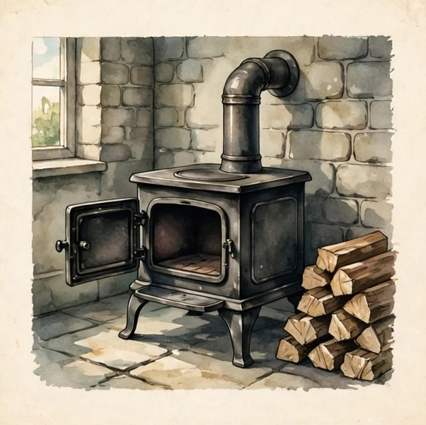
The stove burning with the flue wide open and no pot on it.
Waste, in the physics this house borrows, has an exact definition: energy converted to heat without doing work. The meal bought and thrown away is heat. The subscription unused is a small pilot light of heat, burning all year. The purchase made to regulate a feeling — which regulates it for an evening — is heat with a marketing department. None of these are sins in the model's accounting. They are losses of work, measurable in the only coin that finally matters: the other things the same current will now never do.
The definition earns its place because it separates waste from pleasure with a clean cut. Pleasure is work — the work of joy, rest, memory, repair of the worker — and a household that classifies its pleasures as waste will shortly classify its wastes as pleasures, out of sheer confusion, and end by defending the indefensible and starving the essential. Aim (room seventy-three) is the test: discharge you chose, for a load you can name, is not waste even when it is frivolous. Discharge that happened to you, unnamed, is waste even when it is cheap.
Total waste, like total leakage, is not available to mortals; the target of this hall is not zero heat but a falling share of it, season by season, noticed at the gauge. The household that can say its waste is shrinking has said something most treasuries cannot.
81The Price of Cheap
The cheapest thing in the shop is frequently the most expensive thing in the house, because price is only the first instalment of cost. After it come the repairs it was built to need, the replacement it was scheduled to become, the complements it demands, and — the instalment nobody budgets — the attention it consumes across its short, disappointing life. Cheapness, examined as energy, is usually a loan taken against the future's current at rates the seller was too polite to print.
The opposite error exists and the house will name it to stay honest: expense mistaken for quality, the toll paid at the narrow place of a famous name. Neither error is cured by a rule about price. Both are cured by the same instrument as everything else in this book of rooms: the cost per unit of work. A tool's price divided by its years of service, a coat's by its winters, a pleasure's by the honesty of its memory — the arithmetic is rough and the ranking it produces is ruthless, and it reverses most showroom impressions within a single column of figures.
Buy once, buy well is the folk version, and it is right often enough to keep. The model's version is longer and safer: buy at the price where the whole cost — purchase, keeping, using, replacing — per unit of work done is lowest, and treat both the bargain bin and the flagship with the same calm suspicion until the column of figures says otherwise.
82Discharge Should Light Something
A lamp lit at the end of the channel: the proof of the whole system.
Here is hall seven's whole doctrine compressed into an inspection question: when the discharge happens, what lights up? A room, a capability, a repaired relationship, a neighbour's season, one's own genuine rest — something should be visibly more lit after the money moves than before. Where nothing lights up, the current grounded itself into the earth, and the spender usually knows it instantly: it is the difference between the tiredness after a feast and the flatness after a spree, and no one who has felt both confuses them.
The question is not a puritan's trap. Play lights up the players. Beauty lights up a room for years. A celebration lights up a family's memory for decades and is, on the arithmetic of room eighty-one, frequently the cheapest purchase in the entire ledger. The lamp test does not ask whether the spending was serious. It asks whether it was real.
Keep the test at the gate for large discharges and let small ones flow unexamined; attention has its own budget, and a household that interrogates every coin will shortly stop interrogating any. The gate is for the sluices, not the raindrops. But for the sluices — the purchases with seasons attached — ask the question out loud, and let the answer, whatever it is, be the decision.
83Teach the Current Where to Go
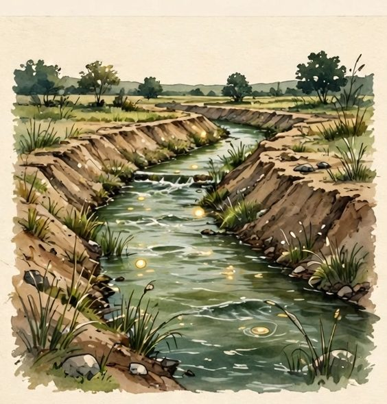
The young river, trained early into good channels.
Current learns its channels early, which is a sentence about households and especially about the young ones in them. A child does not learn money from lectures — the lecture is the one channel that demonstrably carries nothing — but from watching where the household's current actually goes: what is funded without discussion, what is always postponed, what the gates open for instantly and what they have never once opened for. The real curriculum is the flow, and it is taught daily, in full, whether or not anyone applied for the teaching post.
The practical consequence is not anxiety but design. If the discharge pattern is the curriculum, then changing the pattern is the education, and it works at any age of student, including the teacher's. Households report that the single most effective lesson they ever delivered was a season of visibly changed flow — the gate demonstrably opened for the library and closed for the theatre of display — absorbed by the young exactly as water absorbs a new bank: without argument, and permanently.
And the teaching runs upstream too: the household that watches its own current honestly is educating itself, because the flow, unlike the intention, cannot be flattered. Room seventy-nine said the accounts and the story should agree. This room only adds that agreement, once seen, is contagious within a family — and that disagreement, unexamined, is too.
84The Spent Coin Is Not a Lost Coin
Close of the spending hall, with the correction its visitors most often request on the way out: the spent coin is not a lost coin. Loss is one species of spending — the wasted, the leaked, the dragged — and it has been given its rooms. The rest of the discharge is the system working: stored work becoming lived life. A household that experiences every outflow as diminishment will eventually stop outflowing, and arrive, by the most respectable of routes, at the dam of room thirty-one with a clear conscience and a stagnant valley.
The model proposes a cleaner sensation to aim for: the spent coin should feel like a struck match — brief, bright, and spent exactly because something is now lit that was dark. Where that sensation is missing purchase after purchase, the diagnosis is not 'spend less' in the abstract. It is the lamp test of room eighty-two, applied at the gates, plus the leak audit of hall four, applied to the pipes. Between those two instruments, most households find their flatness has an address.
Beyond this door the subject widens from acts to time: the seasons of the current, the tides and droughts no single decision controls. Hall eight is the house's calendar, and it begins, as calendars should, with the turning of the year.
85Rivers Have Seasons
The river in four of its tempers, drawn on one bank by one keeper.
Every flow in this house has been described as if it were steady, and none of them are. Income has seasons — the harvest and the fallow quarter, the contract's flush spring and its silent winter — and expenses have seasons that refuse, with comic reliability, to coincide with them. Hall eight exists because a system designed for the average month will be wrong in every actual month, the way a coat designed for the average temperature is a poor possession in both January and July.
Seasonality is not a defect to be engineered away; it is information about what kind of river you live on. Rivers with seasons are the normal rivers of the world, and the households beside them thrive not by denying the calendar but by building for it: storage sized to the dry season's length, obligations scheduled with the flood in mind, ambitions timed to the water that can actually carry them.
The rooms of this hall walk the cycle in its phases — fat and lean, tide and rhythm, failure of rain and return of rain — and end with the house's whole doctrine of time: the year is a wheel, and the wise household rolls with it instead of demanding it be a staircase.
86The Fat Season and the Lean Season
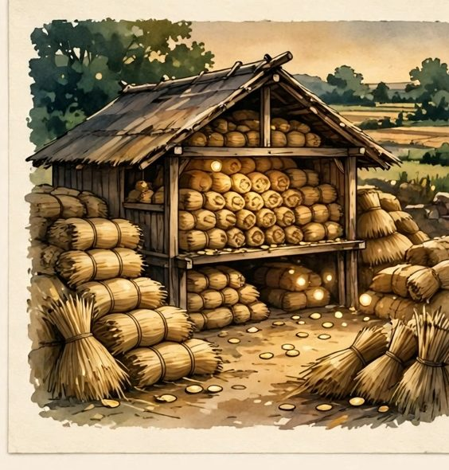
The granary in the fat month; the same granary, respected, in the lean one.
The fat season and the lean season are not two economies; they are one economy photographed twice, and the household that understands this holds the master key to hall eight. In the fat season the current runs high, credit is offered like weather, and every obligation looks easily carried — because it is, in that season. The classic catastrophe is to sign the lean season's name to the fat season's judgements: commitments sized to the flood, arriving punctually in the drought.
The lean season has its own false judgements, mirror images of the fat one's. In the drought, every expense looks like folly, every investment in the future looks like a luxury, and the household is tempted to eat its seed corn of morale — cancelling the small warmth, the modest celebration — which is precisely the expenditure that carries a family through a dry season with its sources intact. Rivers are crossed at their fords, not by drinking them.
The skill that governs both photographs is simply this: to know, at any moment, which season you are in, and to refuse to let that season make permanent decisions in its own image. Seasons pass. Their signatures, if you let them sign, do not.
87Tides in a Small Business
The small enterprise lives the seasonality doctrine in its concentrated form: the tide comes in with the month, the quarter, the tourist season, the contract cycle — and goes out on a schedule that owes nothing to the owner's deserving. Whole respectable businesses are tide-shaped, and their owners' central skill is not seamanship in the storm but honesty in the calm: knowing the business's true average water level, beneath the tide's arithmetic of hope.
The tide table for such a household is room sixty-eight's record kept at a longer rhythm: the level read across years, until the pattern stands up out of the noise. Three seasons of records will tell a tide-shaped earner things no advisor can: the real length of their dry season, the real size of their flood, the obligations that fit inside the low water rather than the high. Almost every survival plan in a tidal business is those three numbers, respected.
And the tide metaphor carries one consolation built into its physics: tides return. The household whose records prove that its low water has always, so far, been followed by high water possesses an asset no bank statement shows — evidence, in its own hand, that endurance is a strategy with a history and not merely a hope.
88Budgeting as Weatherproofing
The roof repaired in summer, the store laid in before the pass closes.
A budget, in this house's vocabulary, is not a list of permissions. It is weatherproofing: the work done in the calm season so that the storm season is an event and not an emergency. The roof is repaired when the sun is out not because the household is gloomy but because that is when roof repair is possible. The reserve is built from the fat months not because the household is frightened but because that is where reserves come from; there is no other quarry.
Seen as weatherproofing, budgeting loses its flavour of punishment, which is the flavour that kills it in most households by February. Weatherproofing is a skilled, satisfying, finite activity with a visible result: the house stands dry. Its rules are correspondingly practical — fix the known leaks first (hall four), size the store to the known dry season (hall six), put the standing discharges in their honest order (hall seven) — and then stop, and go and live in the house.
The desk notes that nobody has ever maintained a budget they experienced as a scolding, and many households maintain for decades a budget they experience as a roof. The difference is entirely in the telling, and the telling, as established in room seven, is a form of attention. Tell it as weatherproofing.
89The Monthly Tide Table
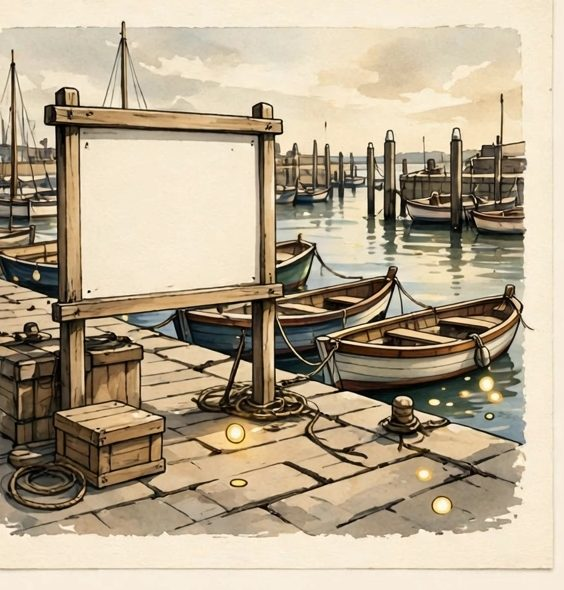
The harbour board with the year's tides chalked in a fair hand.
Harbour towns post tide tables: the year's water, predicted to the hour, chalked up for anyone whose work depends on it. A household can keep the same board, and hall eight recommends it in the plainest form: twelve months across the top, the known tides marked — the tax season, the insurance month, the school year's costs, the holidays' flood, the contract's renewal, the dry quarter of the trade. Most are known to the month already. Almost nobody has written them on one board, and the board, once written, is embarrassing in its obviousness and priceless in its effect.
The effect is the conversion of surprises into appointments. An expense that appears on the tide table is met by a system that was expecting it — stored for, scheduled around, met at the dock with the right equipment. The same expense off the table arrives as an ambush and is paid at ambush prices, in money and in mood. The difference between a household's good and bad financial years is very often nothing but the proportion of the year that was on the board.
Chalk the board annually, at the same sitting as room twenty-four's map is redrawn. Together they are the house's complete atlas: where the water comes from, and when it will be needed. Everything else in these halls is commentary on those two documents.
90Harvest, Store, Endure, Sow
The oldest budgeting system in the world has four verbs, and this room exists to honour it: harvest, store, endure, sow. It requires no application and no account, only the acceptance that different seasons want different virtues — gathering without apology in the first, keeping without panic in the second, enduring without self-pity in the third, and spending on the future, deliberately and first, in the fourth. Most financial distress, examined closely, is a verb performed in the wrong season: sowing debated through the whole of the harvest, or endurance extended, out of habit, into the spring that was meant for sowing.
The cycle also forgives. A household that missed its harvest has not failed at money; it has arrived at the store season with less, and the verbs still apply in order, at the available scale. The wheel's mercy is that it comes around again — which is more than can be said for the staircase model, in which every missed step is permanent altitude lost, and which produces, in its believers, a despair out of all proportion to their actual rivers.
Post the four verbs where the tide table hangs. Between the verbs and the board, a household possesses the whole of hall eight in two artefacts, and the hall's remaining rooms are, by its own admission, elaborations.
The Money Energy Desk
One desk receives all correspondence for this house — questions, corrections, flood marks from your own bank. It is read in the order it arrives. The desk gives no financial advice; it keeps the house.
91Do Not Judge the River in the Dry Month
The dry bed in the dry month: cracked, honest, and not the river's obituary.
There is a month in most rivers' years when the bed shows, and a corresponding month in most households' ledgers when the instinct is to conclude that the system has failed. This room exists to be read in that month. The dry bed is a phase of a living river, not its obituary; reservoirs exist precisely for it (hall six), seasons turn precisely past it (room eighty-five), and the records of room sixty-eight exist so that in the dry month a household can consult evidence instead of mood — evidence that it has been exactly here before, and what the water did next.
Judging the river in the dry month produces the season's characteristic errors: the good asset sold at the drought price, the sound plan abandoned one valley before the rain, the source dug in room fifteen filled in because its first season was shallow. The desk's rule is severe and simple: in the dry month, make only the decisions the dry month requires — the conserving, the mending, the enduring — and let all verdicts on the system's design wait for water. Designs are reviewed in the fat season, when they can be reviewed fairly, which is to say against their whole year and not their worst fortnight.
The river, for its part, is not embarrassed by its dry bed and does not apologise for the mud. It keeps the channel's shape, ready. Keeping the shape is the household's whole dry-month task.
92The Circuit Does Not Sleep, but You Should
Lamps along the night channel: the system runs on, the keeper sleeps.
A money system, once built, does not keep office hours: the standing charges flow at night, the interest accrues at night, the subscriptions of room forty-one keep their patient appointments at night. The circuit does not sleep. This is either a haunting or a comfort, depending entirely on whether the night flows were designed — and designing them is the entire difference between a household that sleeps well in a dry season and one that lies awake adding a column that will not sit still.
The design work is mostly the previous halls, applied to the dark: standing payments set in the hearth's order (room seventy-four), leaks plugged so the night cannot bill for them (hall four), the reservoir gauged so that the night shift's arithmetic is known before it is run. A household that has done these things has, in effect, posted a night watchman it trusts, and its keeper's sleep is one of the interest payments the system makes, in kind, nightly.
Let the corollary be said aloud, since the salesmen of anxiety will not: you are not the night watchman. If the system requires your wakefulness to remain solvent, the system is unfinished, and the finishing work belongs to the daylight hours and the halls already walked — not to another hour of staring at the gauge in the dark, which reads the same at 3 a.m. as it did at tea.
93Cycles inside Cycles
Zoom the calendar and the cycles nest: the week inside the month, the month inside the season, the season inside the longer weather of a working life — the apprenticeship decade, the raising decade, the harvest decades, the long decumulation that the modern world, with uncharacteristic honesty, calls retirement. Each scale has its own fat and lean, and they do not synchronise obligingly: a household can be in the fat season of the year and the lean season of the life at once, and most are, more often than the brochures admit.
The craft of the nested cycles is to know which scale a given decision belongs to. A dry month should be answered from the month's stores; it should not be allowed to rewrite the decade's plan. A lean decade, conversely, cannot be out-waited like a dry month; it asks for new sources and dug springs, hall two's heavy work. Misdiagnosing the scale is the expensive error in both directions — panic at weather, patience at climate.
The tide table of room eighty-nine is the household-scale instrument; the life-scale one is harder to chalk and is attempted rarely, on significant birthdays and in honest conversations. Attempt it anyway. A wheel drawn, even roughly, beats a staircase assumed, because the wheel reminds its owner which of the four verbs the decade is asking for.
94When the Rains Fail
Clouds over the far range, walking slowly: the household reads the sky it has.
Sometimes the rains fail beyond the season — the industry contracts, the region empties, the body that powered the main source reduces its output without consulting the plan. The house will not insult this weather with the language of mindset. What it offers instead is the drought protocol that households in dry countries have always known: shrink the served area to the essential fields, protect the seed corn and the breeding stock — in household terms, the skills, the health, the tools of the next source — and let every ornamental channel close without a funeral.
Drought also changes what counts as a source, in a way worth honouring: the groundwater of room seventy-six, the reciprocity laid down in fat years, becomes a headline item. Households survive long droughts on relationships more often than on reserves, and the discovery is usually reported afterward with surprise by people who thought they were being carried by their planning. They were carried by their plumbing and their neighbours both, which is what the whole model has been saying since the first hall.
And a drought ends a certain kind of argument forever. No one who has been through one mistakes the fat season for their own character again. The weather stays weather — which is room nine's doctrine, learned the slow way, and kept.
95The Long Dry and the Long Rain
The old channel marks on the bank: how high the water once stood, and will again.
Over a long life the alternation itself becomes the teacher. The household that has kept records through two full cycles — the records of room sixty-eight again, now paying their largest dividend — possesses something no advisor can sell: its own flood marks on its own bank, showing how high the water has stood and how low, and what the keeper did, and what it cost, and what it saved. Such a household stops arguing about whether hard seasons return. It has the marks. It plans from the marks.
The marks also discipline prosperity. In the long rain, when the current runs high for years, the flood marks on the bank are the standing refutation of the feeling that this season is the new permanent climate — the feeling behind every generation's identical catastrophe, in which the long rain was treated as a spring and the dry season arrived as a personal betrayal by the universe. The marks say: this has happened, in both directions, within living memory, in this house.
Keep the marks where the next keeper will find them (room seventy-one again). A family's flood marks are among the most valuable documents it owns, worth more than most of the paper in the same drawer, and they are the true inheritance that hall ten will speak of when it considers money across generations.
96Keeping Rhythm When the Beat Changes
The calendar hall closes with the musician's problem: the beat changes. A rhythm kept for a decade — the monthly wage, the annual contract, the seasonal trade — gives way to a new tempo, and for a while the household dances badly, spending in the old rhythm against income in the new one, storing for seasons that no longer exist, fearing droughts the new climate does not have. The dissonance is not failure. It is the sound of an old tide table being used on a new coast, and the remedy is the standing one: redraw the board (room eighty-nine), re-survey the sources (room twenty-four), re-declare enough (room sixty-five).
What must not be done is to keep the old beat out of loyalty and call the resulting bruises bad luck. Rhythms are tools. The household that treats its financial rhythm as an identity will suffer every genuine change of circumstance as a bereavement; the one that treats it as instrumentation will suffer it as an inconvenience, which is the correct size for it.
Beyond this door, the house stops describing and starts instructing: twelve steps, sequenced, plain, and deliberately small — the whole doctrine of the previous ninety-six rooms compressed into a practice a household can begin this week and hand on when it is done. The map is drawn. Now walk it.
97Step One: Look at the Whole River
The whole valley from the keeper's hill: sources, channels, store, and sea.
The twelve steps of this hall are the doctrine of the house reduced to a walk, and the first is the walk's survey: look at the whole river. Not the balance — the river: every source from hall two, every channel from hall three, every store from hall six, seen together, on one page, in one sitting. Most households have never performed this act. They know their money the way one knows a city lived in for years — by routes, not by map — and are regularly surprised by districts they have been funding for a decade.
Use the two artefacts the house has already built: the map of inflows (room twenty-four) and the tide table (room eighty-nine), and add the third that this step creates — the list of stores with their purposes (room sixty-four) — laid side by side. Three pages. That is the whole river, for almost any household that exists, and the act of laying them side by side is itself most of the value: connections appear that no single document shows, a source visibly feeding a leak, a store quietly shaped for a season that no longer comes.
Do not fix anything in this step. The surveyor's discipline — see it whole, see it plain, write down what is actually there — is the foundation every later step stands on, and a foundation poured in a hurry to start fixing is how towers end up as attractions.
98Step Two: Name Every Source
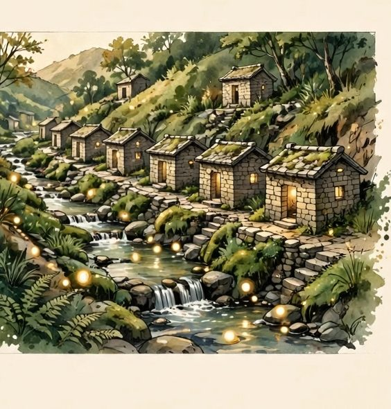
The keeper writing names on the spring-houses, one by one, in chalk.
Step two names the sources. Go back to the map of inflows from room twenty-four — if it exists, this step is an hour's revision; if it does not, it is an afternoon's honest work, and the afternoon is the fee for admission to everything after. Every inflow gets its name, its shape (spring, well, or rain), its season, and its keeper: the person, habit, or asset whose care keeps it flowing. The keeper column is the one most often left blank and most worth filling, because unnamed keepers are unthanked, unrelieved, and eventually unsurprised to find themselves taken for weather.
Beside each source, one more entry: its condition, in the plainest words available — strong, steady, thinning, new, borrowed. No numbers are required; this is a surveyor's notebook, not an audit. The five adjectives, honestly assigned, will tell the household where its digging seasons should go (room fifteen), which single failure would flood it (room nineteen), and which source has been quietly carrying the whole valley while receiving none of the maintenance budget of gratitude (room twenty-three).
Pin the named map beside the tide table. Steps three onward assume these two documents exist and are current. The house knows they will go stale — all maps do — and has provided for that: step eleven is the review that redraws them, and it is already on the calendar you have not written yet.
99Step Three: Trace One Coin for a Day
The third step is the meditation from room twenty-nine, promoted to an exercise: choose one unit of money — the next payment that leaves the reservoir, any amount — and trace it for a day. Where does it land first? Whose source does it become? What does that person pay with it, as far as you can honestly follow? The chain will break quickly in a modern economy; follow it while it holds, in imagination where knowledge ends, and notice what the exercise does to the spender holding the coin.
It does two things, reliably. First, it dissolves the fiction that spending is disappearance: the coin has a downstream, populated and real, and the spender is a headwater whether they applied for the position or not. Second, it restores scale. A household that has traced its current into three other households stops experiencing its own flow as small change in the world's river and starts experiencing it as what it is — a tributary, with a tributary's genuine power and genuine responsibility.
One coin, one day, once. The step does not need repeating on a schedule; it is a vaccine, not a vitamin. But the household that has never done it is missing the sensory knowledge the rest of the steps assume, the way a miller who has never stood in his own millrace is missing something no diagram supplies.
100Step Four: Find the Largest Leak
The keeper's finger on the largest drip: found by looking, not by worrying.
Step four returns to hall four with a notebook: find the largest leak. Not all the leaks — the discipline of the steps is sequence — the largest one, by annual size, among the outflows that do no work: the unused, the duplicated, the penalty-born, the drifted. It will be found in the statement, not in the conscience; conscience overestimates the picturesque leak (the daily coffee) and underestimates the structural one (the wrong tariff, the legacy contract, the interest on the stone in the pocket), and the statement, read whole, corrects both.
The method is room thirty-eight's, made routine: one full statement, one sitting, every recurring outflow listed and annualised. The largest leak will announce itself with very little ceremony. Write it down with its annual figure beside it — the figure is part of the medicine, because a leak described monthly sounds like a peccadillo and the same leak described annually sounds like what it is: a small employee the household is paying to do damage.
Do not patch it yet. That restraint is step five's dignity, and it matters: a step's whole value lies in its being one thing. Surveyors who start digging at the first fault they find end with a field of holes and no road. Note it, size it, and walk on — the patch is next, and it is deliberately anticlimactic.
101Step Five: Patch It Without Drama
The wrench, one joint, a dry floor: the repair takes the size repairs actually take.
Step five is the repair of the leak found in step four, and the house insists on describing it at its true size: a phone call, a form, a visit, a setting. Budget an hour. It will probably take eleven minutes, three of them on hold, and the disproportion between the dread and the deed is the lesson the step exists to teach — because the household's remaining leaks are all guarded by the same inflated dread, and now there is evidence against it, in writing, with a date.
Then record the win in the system's own units: the leak's annual figure, struck from the outflow column, on the map beside the tide table. This is not bookkeeping vanity. The recorded figure is what the next steps will spend — the steps that follow redirect this exact current to the reservoir and to a deliberate act of giving — and a redirection that is not quantified tends to evaporate into the general flow, which is the leak repairing itself by camouflage.
One leak, patched, recorded. Not the second-largest — that is another season's step four, or the same ritual next quarter (room forty-eight). The steps are a path, not a purge, and their power is entirely in their order and their pace. Walk on.
102Step Six: Measure the Reservoir
Step six takes the household to its storehouse with a measuring rod: what, exactly, is stored — in total, and in each battery, at its true temperature (room sixty-six)? The measurement is of the kind in room sixty-eight: honest round numbers, the fast store and the slow stores separated, debts entered on the same page as negative storage, because a reservoir with a sluice open to a creditor is not the size its surface suggests. Many households perform this sum for the first time in their lives at this step, and the desk reports the commonest reaction verbatim, in both directions of surprise: 'Oh. That's all?' and 'Oh. That's more than I feared.' Both are progress. Both replace a mood with a number.
Then compare the measurement with room sixty-five's declaration: the figure the household chose, in daylight, as enough. The gap between the gauge and the declaration — in whichever direction — is the household's true financial position, more truthful than either figure alone. A store above its declared enough is a decision waiting to be enjoyed. A store below it is a plan waiting to be scheduled. Neither is a verdict.
Write the measurement and the date on the map, where the next keeper and the next season's review (step eleven) will find them. A single gauging is a photograph. The point of the steps is to make it the first frame of a film.
103Step Seven: Decide What the Battery Is For
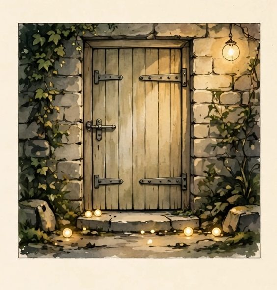
The keeper painting the purpose on the storehouse door, in letters a child can read.
Step seven gives the battery its orders. Room sixty-four's test — what are you for? — is now applied to the whole store, portion by portion, until every part of it carries a written purpose: this for the lean season, this for the roof, this for the chance that must be seizeable, this, explicitly, for joy, because a store with no joy in its orders will be raided by joy eventually, in a worse-planned form. Portions that cannot be given a purpose are the step's real finding: they are dam-water (room thirty-one), and the household must either assign them a purpose or admit them to the current — to spending, giving, or debt's drag — where they will at least do work.
Write the purposes where the store is kept in mind: on the map, in the note with the important papers, anywhere the keeper actually looks. A purpose that exists only in a mood will be renegotiated by every later mood, and moods are notoriously poor custodians of other seasons' intentions.
Notice what this step quietly accomplishes for the whole system: it makes future spending decisions cheap. The question 'may we use this?' is replaced by 'is this what it is for?' — a question with an answer, available at midnight, costing no anxiety. Households consistently name this, afterward, as the step that changed their sleep. The house believes them; sleep has been its metric all along.
104Step Eight: Set One Channel Straighter
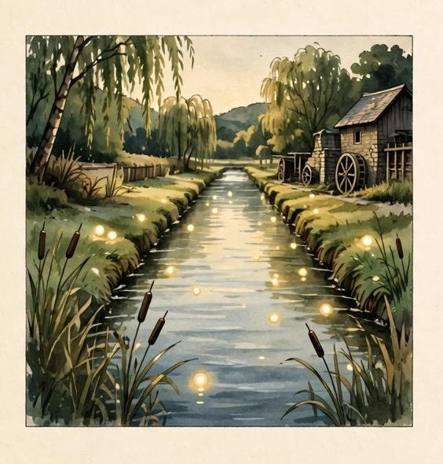
One bend taken out of the channel: the water arrives sooner and says so.
Step eight chooses one channel and sets it straighter. Every household's system has a notorious bend: the payment that requires three transfers and a prayer, the income that arrives through a toll-keeper's narrow gate (room forty-two) when a wider one exists, the savings that must be moved by hand and therefore are moved by mood, the bill whose lateness is a design feature of its own paperwork. Choose one — the one whose friction the household complains about most, since complaint is data — and reroute it by the simplest available engineering: direct where it was indirect, automatic where it was manual, dated where it was whenever.
The step is deliberately singular, like the leak. A general vow to 'sort out the finances' has the lifespan of a New Year; a single straightened channel is a permanent reduction in the system's friction, compounding quietly every month thereafter, asking nothing further of anyone's character. Hydraulic improvements outlive motivational ones because they do not consult the mood before functioning.
Record the straightening on the map, with the old route struck through rather than erased. The struck-through routes accumulate into the household's engineering history — and at step twelve, when the map is taught to someone else, they will be its most persuasive pages.
105Step Nine: Put One Payment on Rails
Step nine puts one payment on rails: a standing, automatic discharge, chosen by the household in a calm hour to execute itself forever in uncalm ones. The classic candidate is the transfer to the reservoir — pay the battery first, on the day the inflow lands, before the discretionary currents widen to fill the channel, because a reservoir filled from leftovers is filled in the months when there happen to be leftovers, which is to say in the months it is needed least. But any honest obligation qualifies: the debt's drag-payment, the insurance, the regular gift. The rails do not care what rides them. They care that the decision, once made well, is not remade monthly by whoever is tiredest.
Size the railed payment by the tide table, not by enthusiasm: an amount that survives the lean month without being suspended, because a rail that is lifted every dry season teaches the system that rails are optional. Small and unbroken beats large and heroic, as it has beaten it in every hall of this house.
One payment only, as ever. When it has run for a season without attention, it will have become part of the plumbing, and the household will have acquired the steps' central skill in its purest form: a good decision, made once, still working. That is the entire technology. The remaining steps are its widenings.
The Money Energy Desk
One desk receives all correspondence for this house — questions, corrections, flood marks from your own bank. It is read in the order it arrives. The desk gives no financial advice; it keeps the house.
106Step Ten: Give Some Current Away on Purpose
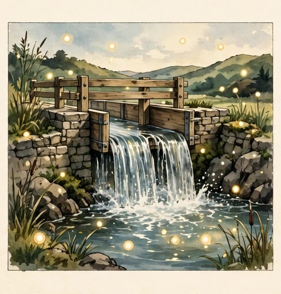
The gate opened outward on purpose, in good weather, by a cheerful keeper.
Step ten is the one visitors resist, which is why it stands late in the sequence, when the system can bear it: give some current away, on purpose, while things are ordinary. Not the surplus at the year's end — the step specifies a deliberate release in the normal course of the flow, sized to be felt slightly and missed not at all: a named gift, a forgiven debt, a payment rounded up for a tradesman whose season is leaner than yours, a standing contribution riding the rails of step nine. The amount is the household's own; the deliberateness is the step.
The engineering reason is real and precedes the moral one. A system that has never practised releasing current on purpose will release it under pressure eventually — badly, resentfully, or in the panic generosity that empties the fast battery. Giving, rehearsed in calm, is a gate exercised before the flood needs it. And the flow it creates outward is the only reliable test of room sixty-five's declaration: a household that can give from its current has, by demonstration, enough — a fact no gauge reading can establish as firmly.
Record it on the map like any other channel, without halo. It is plumbing. It is also, the desk notes from long observation, the step after which households stop describing the twelve steps as a financial exercise — usually in the middle of the sentence, and with some surprise.
107Step Eleven: Review at the Turn of the Season
The keeper at the turning of the year, chalk in hand, the board already half-redrawn.
Step eleven is the review, and it is scheduled, not occasional: at the turn of the season — quarterly is the house's rhythm, the equinoxes of the household's actual year — the keeper walks the whole system again with the artefacts in hand. The map of inflows (step two) is redrawn against reality. The reservoir is re-gauged against its declaration (step six). The tide table is re-chalked (room eighty-nine). The leaks get their quarterly ten minutes (room forty-eight), and the flood marks of room ninety-five get their new line, high or low, with the date.
The review's tone is fixed in advance by this step's wording: it is a keeper's round, not a trial. Its questions are the surveyor's, in order — what changed, what held, what surprised, what is the one repair for the coming season — and its product is a single page of findings, kept with the last one. Two pages of findings, a year apart, will teach a household more about its own river than any instrument the professions sell.
Put the review dates on the calendar now, all four, before this step is counted complete. A review that depends on being remembered is a review of the kind this whole house exists to replace — the heroic, the dreaded, the decade-late. Rhythm, not emotion: the tide does not consult the keeper's mood, and neither, after this step, does the keeper's round.
108Step Twelve: Teach the Map to Someone Else
The last step turns the practice outward: teach the map to someone else. The map, by now, is a real document — sources named, stores purposed, rails laid, flood marks entered, the household's engineering history struck through and legible (room seventy-one anticipated this hour). Teach it to the person who would need it if you were not there: walk them once around the whole system, gauge to gate, at kitchen-table pace, answering the questions that only a newcomer asks — which are, reliably, the questions the keeper stopped asking years ago and should not have.
Teaching is also the audit of the practice itself. A step you cannot explain has not been taken, only performed; a channel whose purpose you cannot say aloud to a beginner is dam-water with good publicity. The newcomer's confusion is the final leak detector in the house, and it finds the ones that familiarity had waterproofed against the keeper's own eyes.
When the teaching is done, the twelve steps are complete — which is to say, they are ready to be walked again, at the next turn of the season, by a keeper who is now also a teacher. The house knows no graduation beyond that. Rivers do not graduate. They are kept.
109A Guide for the New Arrival
The guide meeting the new arrival at the valley gate, map under one arm.
For the visitor who has arrived at the long-view hall without walking the others — and every hall keeper knows this is most visitors — here is the house in one room. Money is treated here as energy: it flows from sources, through channels, into stores, and out to work. Attention is the currency underneath; the flow is the fact; worth is not measured here. Leaks are information, debt is drag, storage is a promise, spending is discharge with a direction, giving is circulation at its purest, and the year is a wheel with four verbs on it: harvest, store, endure, sow.
If that paragraph is all you take, take also the three artefacts, because the house is a practice and not a poster: a map of your inflows, named by shape; a tide table of your year, chalked once; and a declaration, in a number, of what enough is for your household. With those three pages a person can begin the twelve steps of hall nine, which are the whole doctrine made walkable, and which end — deliberately — with teaching the map to someone else.
And if even the artefacts are too much for today, the house leaves its smallest coin by the door: look at the whole of one statement, once, without flinching. Every hall in this building is, in the end, an elaboration of that single act of attention.
110Questions People Ask at the Desk
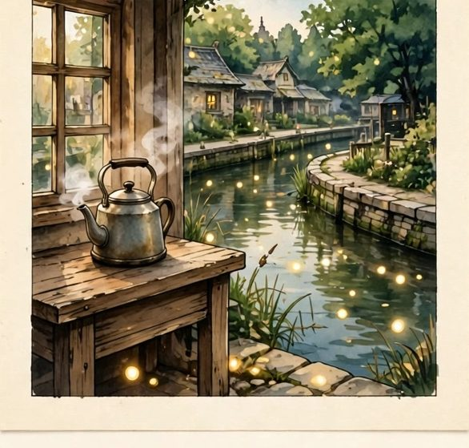
The desk at its hour, the kettle on, the questions arriving in their usual order.
The desk keeps a list of the questions it is actually asked, and answers three of them here in its own manner. Is this not obvious? — Much of it, yes, in the way that 'eat sensibly and sleep' is obvious: the difficulty was never information. It is attention, sustained, in the presence of a system designed by professionals to spend yours for you. The house sells nothing against that design except the habit of looking, which it gives away. Is this investing advice? — It is not; room one hundred and eighteen will be blunt about it, and the desk is blunter: no one here will ever tell you what to buy.
Will it work for me? — The desk declines the question in that form, and offers the honest substitute: the practices are small, testable, and cheap. Draw the map and see if it surprises you. Gauge the reservoir and see if the number changes your sleep. Patch the largest leak and observe the year. A model that asks to be tested at walking pace may be trusted exactly as far as it passes — no further, and the desk would not have it otherwise.
The remaining questions, the desk finds, are usually not questions. They are the visitor's first act of attention, looking for a door to enter by. Any of them will do. That, a predecessor house taught us, is a principle with applications well beyond money.
111Questions Accountants Ask, Answered Carefully
Strangers ask different questions — sharper ones, usually, and the desk answers them as carefully as it knows how. You say money is energy, but money is created by banks and destroyed by defaults; where is your conservation law? — Absent, by admission: room eight named this as the metaphor's edge, and the house repeats that where the ledger and the lens disagree, the ledger wins. You say attention is the currency underneath — can attention pay a tax bill? — No. It can notice the bill in the month it arrives, which is how tax bills get paid at their first price instead of their third.
You speak of seasons and reservoirs, but what of the household whose inflow is simply too small for its valley — is all this not a decoration on insufficiency? — The desk answers this one slowly. The model does not create water, and it does not pretend that plumbing is rain. What it claims is narrower and, the house believes, still worth a hundred and twenty rooms: that at every level of flow, shape matters — that two households on the same insufficient stream fare differently according to the state of their channels, stores, and seasons — and that dignity in the handling is available at every level, and is not a consolation prize but a good in itself.
And the last stranger question, the one asked with a smile: is the keeper of this house rich? — The desk refers the visitor to room nine, and closes the ledger for the day.
112What a Visitor May Take Home
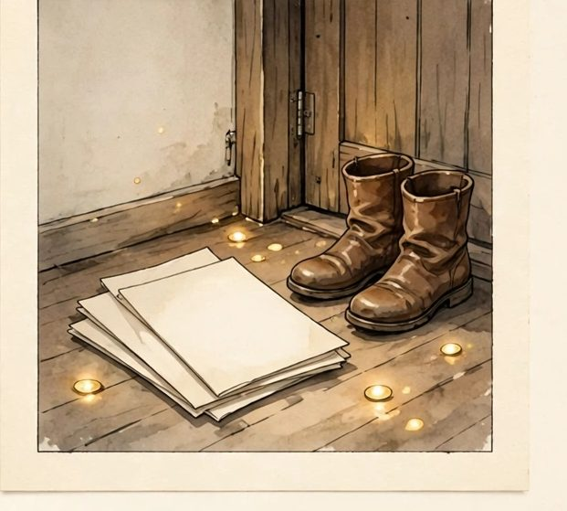
The visitor leaving with three pages and a dry pair of boots.
What may a visitor take home from this house? Not a product — the house has none — and not a promise, which was refused politely in room six and is refused again here, cheerfully. Three things are on the table by the door, free to any hand. The first is a vocabulary: source, channel, reservoir, leak, drag, season — six words that, applied to a household's money, convert a fog into a landscape. Fog cannot be managed; landscapes can be walked, mapped, and kept.
The second is a standard of self-judgment, or rather its replacement: the keeper's questions — how regular, how dependent, how maintained — offered in place of the world's question, which is only ever how much. A visitor who leaves grading their system by its keeping instead of their worth by its level has taken the house's most valuable export, and it weighs nothing in the luggage.
The third is the three pages themselves, if they were drawn: the map, the tide table, the declaration of enough. Houses are known by what their guests carry out the door. This one hopes to be known as the house that sent people home with homework they were glad of — an unfashionable ambition, entered in the register without apology.
113A Household Arranged Around Flow
One household, all its channels visible in the evening light: kitchen, workshop, gate.
What does the finished system look like, assembled in an actual life? Modest, mostly — that is the surprise visitors report. A household arranged around flow does not gleam. Its sources are named and tended like garden plots, none of them worshipped, one or two of them dug by hand and spoken of with quiet pride. Its channels are few, honest, and mostly automatic. Its reservoir has a level everyone in the house roughly knows and a set of purposes everyone can recite, including the purpose marked joy. Its calendar has a chalk board in it somewhere, and four dates a year on which the keeper walks the pipes.
Its conversation about money is the true tell. In such a house the subject is weather-talk: regular, unheated, occasionally funny, never the family's thunder. Decisions arrive at their seasons and are made from documents rather than moods. Emergencies happen — flow does not abolish weather — and are met from stores and groundwater, and become, within a year, entries in the flood-mark register rather than legends of the great catastrophe.
The house does not claim this household is happier than its neighbours, because it does not measure that either. It claims only that its river is known, and that a known river, over a lifetime, is a different possession from an unknown one — the difference, the keeper says, between living beside water and merely getting wet.
114Money Energy in Ten Years
Project the model forward ten years and its predictions are unfashionably plain. The households that kept records will know their rivers to a degree that will look, to their recordless neighbours, like luck or genius; it will be neither, only climate data, personally collected. The ones that declared enough will have spent a decade spending and giving from above that line — a decade of fountains running — while the ones that never declared it will be, many of them, richer and still waiting to begin. The model offers that contrast without triumph; the second household is not a villain in anyone's story, only a reservoir in search of its gauge.
The model itself will change, as lenses do. Money's shapes are not finished mutating — new channels, new speeds, new toll-keepers at narrower gates — and the house's plumbing vocabulary will need the same maintenance the house prescribes for everything else: seasonal inspection, leaks of meaning patched, the map redrawn. A metaphor kept for ten years without review becomes a superstition; one reviewed becomes a tradition, which is a superstition that has agreed to keep working for its living.
What will not change, the keeper wagers the house on it: attention will still be the underneath currency, and it will be scarcer, and better hunted by professionals, than it is today. In ten years the practices in these halls may look quaint in their materials. In their substance — look, name, gauge, patch, store, aim — they will look like what they are: the permanent parts.
115Failure Modes, Listed Calmly
The keeper's notebook of things that went wrong, kept without rancour.
The failure modes, listed calmly, as is this house's custom with uncomfortable inventories. The model fails as astrology: when its language of flow and seasons is used to explain a fortune instead of to inspect a system, it has become a horoscope with plumbing. It fails as shame: when a household's low reservoir is read as a verdict on its keepers, room nine has been disobeyed, and the house disowns the reading. It fails as procrastination: when the map is redrawn endlessly and the largest leak is never patched, attention has become the newest form of its opposite.
It fails as a sales floor — the day any room in this house is used to sell a scheme, the room is to be considered condemned, whoever is holding the keys. And it fails as a substitute: for wages that are too low, for rents that are indefensible, for the structural weather that no household's plumbing commands. The house has said so before (room one hundred and eleven) and repeats it in the failure list, because a model that cannot name what it cannot fix will eventually be used to blame people for the rain.
Kept inside those fences, the model does its modest work. The fences are not fine print — they are the load-bearing walls, and this room hangs them in the Long View hall where the light is best.
116If This Page Is All That Remains
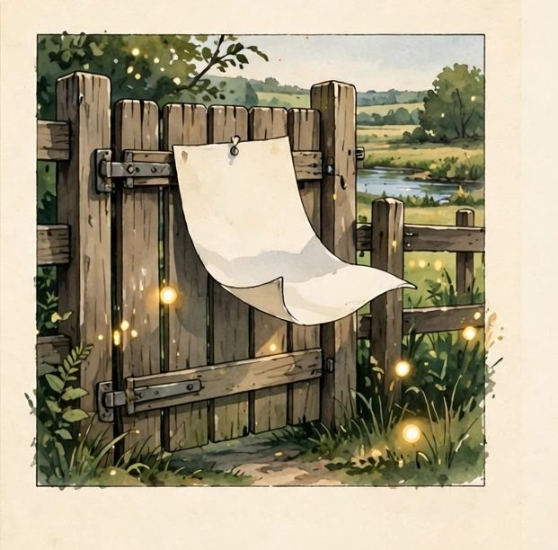
One page, left on the gate where the weather can read it too.
If this page is all that remains — if the house around it is someday unbuilt, the links rotted, the desk's kettle cold — the keeper asks that the surviving room be, if chance permits, this one, because it fits in a pocket. Money is energy that agreed to be counted. Attention is the currency underneath. See the whole flow plainly; name your sources; know your reservoir's level and what it is for; patch the largest leak without drama; spend on the load that matters; give some current away on purpose; and review it all at the turn of the season, calmly, in writing.
None of that requires this house, a desk, or a model. It requires a page of one's own and an honest hour per season, and it was all, the keeper admits with a straight face, known to grandmothers before it was written here. The house's only invention is the arrangement — one hundred and twenty rooms in a row, so that a visitor walking them slowly would have time for the knowing to become a practice instead of a poster.
The rest of the rooms, if they survive, are commentary. This one is the text. The keeper has underlined nothing, in accordance with the house rules.
117A Note from the Keeper's Desk
A personal note, entered in the register at the end of the Long View hall, from the desk that has received this house's correspondence since its first room. The desk has read, over the seasons, the questions summarised in rooms one hundred and ten and one hundred and eleven, and a great many that were not questions but weather reports from other people's valleys: droughts outlasting reserves, springs found late and dug with bleeding hands, fountains running again. The desk answers what it can. What it cannot answer, it keeps, and the keeping has taught it the house's doctrine better than the writing did.
The doctrine, from the desk's chair, is mostly mercy. Systems fail at their leaks and are repaired at them; people fail at their seasons and are met in them, or not, by the groundwater of each other's attention. If the house has a secret — and a concept hall is allowed one — it is that the model's hydraulics were always a pretext for the mercy: a way to talk about each other's money, and one's own, in sentences that do not wound.
Write to the desk, then, if the walk raised anything the rooms did not settle. It reads in the order received. It answers what it can. The kettle, contrary to rumour, is on.
118Fine Print, Honestly
The fine print, printed large: honesty looks good at this size.
The fine print of this house, printed at full size, in accordance with its rules. Money Energy is a concept page of Hi-Tech Limited Holding: a speculative project, a design study, and a working draft. It presents a metaphor — money considered as energy — and a set of reflective practices built on that metaphor. It is not financial advice. It is not a financial service, a product, an offer, or a promise of any outcome. Nothing in these rooms recommends any investment, security, currency, account, or course of action, and nothing here should be read as a substitute for qualified advice about your own circumstances, which the desk encourages you to seek where the sums matter.
No statistics in these rooms should be relied on as measurements of the world; the page has deliberately offered almost none, and its numbers — twelve steps, ten halls, four verbs — are architecture, not data. The forms on this page transmit messages to the Holding's desk; they do not open accounts, move money, or create any obligation on either side. Prices, where the word appears, are discussed as a concept and never quoted as an offer.
If anything in these rooms conflicts with a law, a ledger, or the advice of a professional you trust, the law, the ledger, and the professional are right and the rooms are wrong, and the desk will correct the rooms when told. That is the whole of the fine print. It means every word, and it is, by the house's reckoning, the most important room in the building after the first.
119Last Light on the Water
Evening on the reservoir: the day's current, settling to its level.
The walk ends, as the house's walks tend to, at the water in the evening. The sources have been named and their keepers thanked; the channels are as honest as a season's work could make them; the reservoir stands at its known level, labelled like a storehouse that intends to be inherited; the largest leak is a struck-through line in an old notebook. Nothing about the scene is finished — rivers are not finished — but everything about it is known, which is the only completion this house has ever offered for sale, and it does not sell it.
If the visitor leaves with a changed sensation, the desk hopes it is this one: that money, which arrived in the first room as a judgement and a weather system, leaves as a river — impersonal in its physics, personal in its plumbing, and entirely capable of being lived beside without either worship or fear. That sensation, kept, is worth more than most balances, because it survives all balances.
The light is going. The desk is still open — it is, the keeper insists, the whole point of a desk — and the door of the last hall is the same as the door of the first: unlatched, unhurried, with the river audible through it.
120The Current, Still Moving
The final room is short, because everything in it has already been said at the length it deserved. The current is still moving. It was moving before this page was written — through wages and gifts, reservoirs and leaks, fat seasons and dry beds — and it will be moving after, through hands the keeper will never see, doing work the keeper will never be thanked for, which is the nature of currents and the reason they are worth tending without applause.
What has changed, if the walk worked, is only the seeing: one household's river, known — its sources named, its channels honest, its store gauged, its seasons chalked, its steps written into a rhythm that will outlast the mood that started it. That is the entire harvest of a hundred and twenty rooms, and the house finds it, on inspection, to be enough.
The desk leaves the last word where the first hall left the first one: with the visitor, at the door, in the sound of water. Go well. Keep the gauge honest. The river will do the rest, as it was always going to.
The Money Energy Desk
One desk receives all correspondence for this house — questions, corrections, flood marks from your own bank. It is read in the order it arrives. The desk gives no financial advice; it keeps the house.